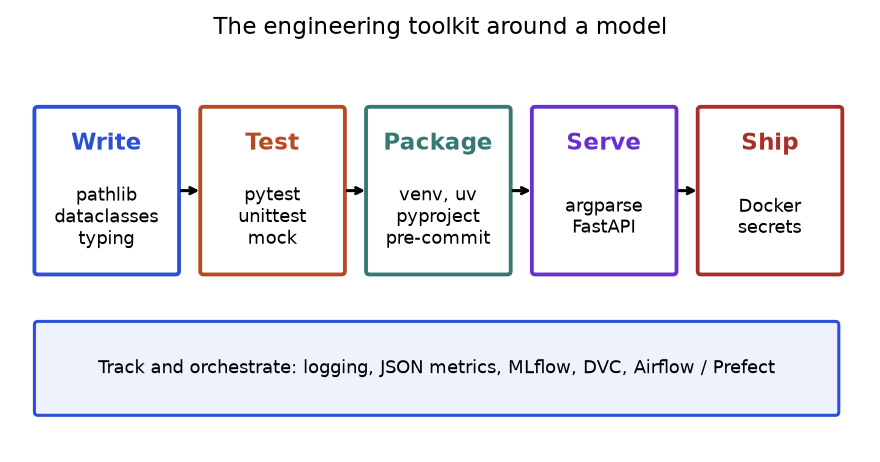
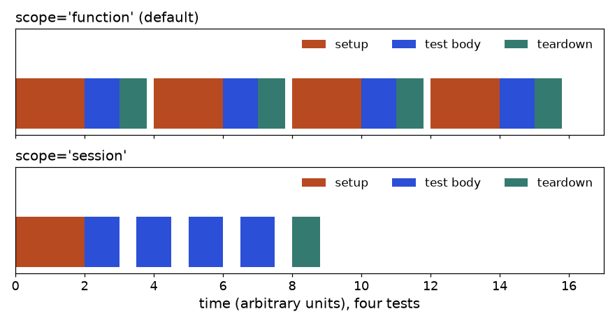
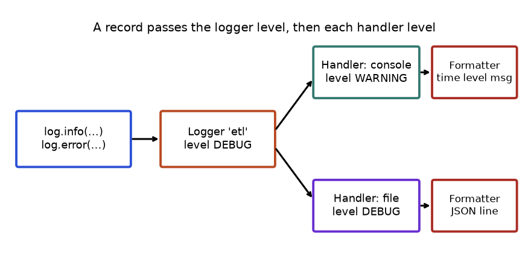
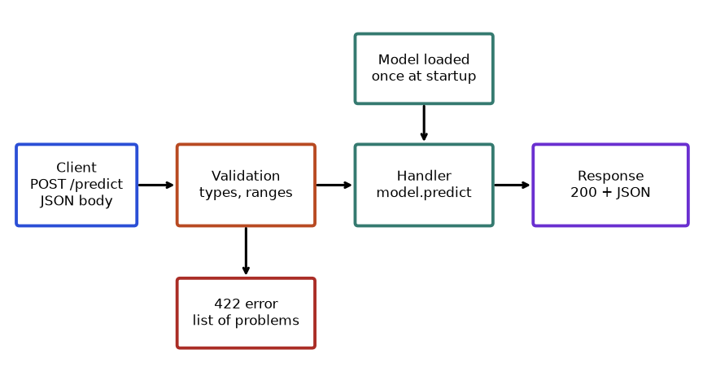
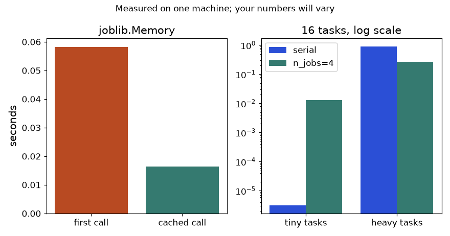
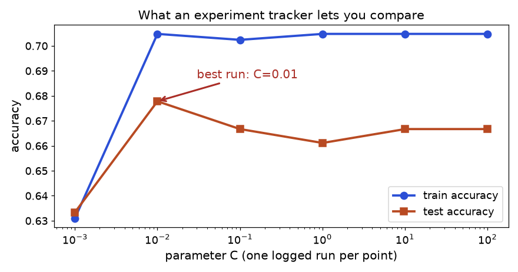
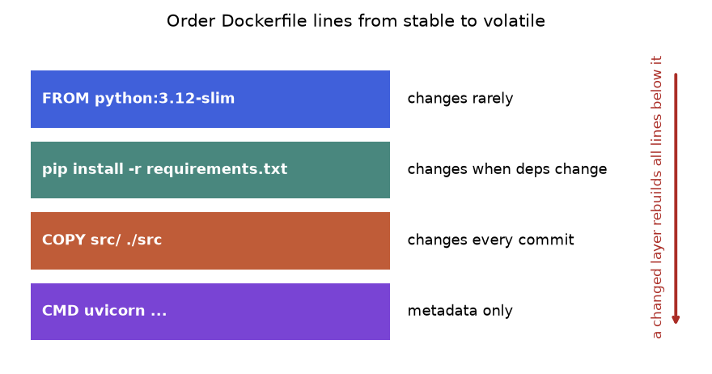
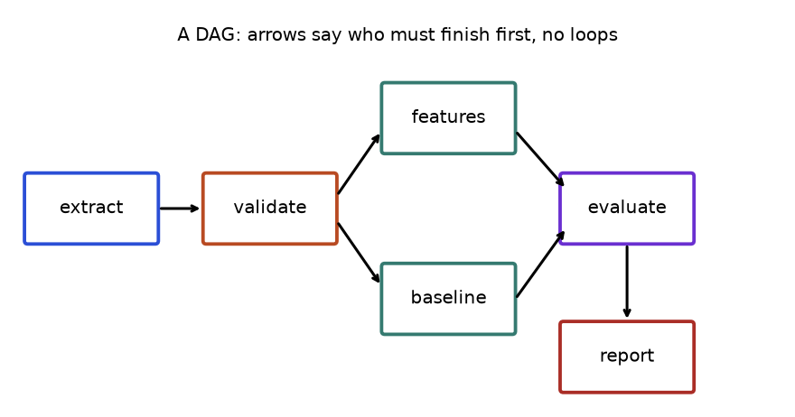

Priya is a data analyst at an online grocer. Last month she built a churn model in a notebook. It works: 81% of the customers it flags really do leave. Now her manager says: "Great. Run it every Monday on the new export, keep the numbers somewhere we can compare, and let the web team call it from the app." Priya looks at her notebook. It has a hard-coded file path, a password pasted in cell 3, no tests, cells that only work when run in a certain order, and a model that nobody can rebuild if her laptop dies.
Nothing in that notebook is a modelling problem. Every problem is an engineering problem, and the Python world has a standard answer to each: tests (pytest) to know a change did not break anything, logging to see what a job did at 3 a.m., argparse or Typer to turn a script into a command, pathlib for paths that work on every machine, dataclasses and type hints for configuration that cannot silently be wrong, venv, uv and pyproject.toml for an environment you can recreate, FastAPI to serve predictions, joblib to cache and parallelise, MLflow and DVC to remember which data and parameters produced which model, Docker to ship it, and Airflow or Prefect to run it on a schedule.
This chapter is part of the Library Handbook, so it is practical and point by point. By the end you will be able to write and run tests, build a command-line tool and an API, train a model in a reproducible script that records its parameters and metrics, lay out a project that another person can install in two commands, and recognise the standard fixes for the problems that appear again and again. Only the standard library, numpy, pandas, scikit-learn, matplotlib, joblib, httpx and pyyaml are installed on the study machine, so some tools are shown as code marked not run here. Wherever possible, a runnable equivalent built on the standard library is shown beside them, and every printed output in the chapter was produced by running the code with Python 3.14.
| Tool | Use it for | Do NOT reach for it when |
|---|---|---|
| pytest / unittest | Checking that functions behave as promised, every time you change code | You only need to explore data once; a throw-away notebook does not need tests |
| logging | A timestamped record of what a job did, with levels | You want to show the user a result; use print or the return value |
| argparse, Typer, Click | Turning a script into a command with options and help | The script has no inputs; a constant is simpler |
| pathlib | Building and inspecting file paths, reading and writing small files | You need to read millions of rows; use pandas or pyarrow after pathlib finds the file |
| dataclasses, typing, mypy | Typed config and records, static checking of mistakes | Data arrives from outside and must be validated at run time; use pydantic for that |
| venv, pip, uv, pyproject.toml | A recreatable environment and an installable package | Your system needs non-Python libraries pinned too; use Docker or conda |
| FastAPI | A typed web API with validation and automatic docs | A nightly batch job; write a CLI and a scheduler instead |
| joblib | Caching slow function results on disk, parallel loops, saving sklearn models | The work is tiny (overhead dominates) or already vectorised in numpy |
| MLflow, DVC | Comparing many experiments; versioning big data files | One model, one dataset, one person; a JSON file of metrics is enough |
| Docker | Shipping the same environment everywhere | You only run on your laptop |
| Airflow, Prefect | Scheduled, retried, monitored multi-step pipelines | One script run by cron is enough |
| pre-commit | Running formatters and checks before every commit | You work alone on a one-file script |
Not run here: these commands need network access.
# create and activate an environment, then install what the chapter uses
python3 -m venv .venv
source .venv/bin/activate # Windows: .venv\Scripts\activate
python -m pip install pytest typer fastapi uvicorn mypy mlflow pre-commit
# or, with uv (a fast installer and project manager):
uv venv && uv pip install pytest typer fastapi uvicornWhatever you install, always ask the interpreter which versions it actually sees. This block works for every library, installed or not, and it is the first thing to run when something "should work".
import importlib.util
import importlib.metadata as md
import sys
print("python", sys.version.split()[0])
libs = {"numpy": "numpy", "pandas": "pandas", "sklearn": "scikit-learn", "joblib": "joblib",
"yaml": "pyyaml", "httpx": "httpx", "pytest": "pytest", "fastapi": "fastapi",
"typer": "typer", "mlflow": "mlflow"}
for module, dist in libs.items():
if importlib.util.find_spec(module) is None:
print(f"{module:8s} not installed")
else:
print(f"{module:8s} {md.version(dist)}")python 3.14.3
numpy 2.5.3
pandas 3.0.6
sklearn 1.9.1
joblib 1.6.0
yaml 6.0.3
httpx 0.28.1
pytest not installed
fastapi not installed
typer not installed
mlflow not installedfind_spec asks Python whether an import would succeed, without importing (and without crashing).import sklearn but pip install scikit-learn.importlib.metadata.version reads the installed version from package metadata, the same number pip list shows.pytest, fastapi, typer and mlflow are missing on this machine. That is why they appear as "not run here" below.from pathlib import Path is the accepted exception for very common names.import numpy as np, import pandas as pd, import typer, import pytest, import joblib. Do not invent others.from module import * in real code. It hides where names come from.Think of a project as a conveyor belt with five stations and a logbook underneath. You write typed, tidy code; you test it; you package it so it installs the same everywhere; you expose it as a command or an API; you ship it in a container. Underneath, logging and tracking record what happened, and a scheduler decides when the belt moves.

How to read it: move left to right to follow the life of a change. Every box answers one question: is the code tidy (Write), is it right (Test), can someone else install it (Package), how do people call it (Serve), where does it run (Ship). The wide bottom box answers "what happened, and when does it run again?". When you debug, find the box where the problem lives first.
A test is a small function that calls your code with a known input and checks the answer. When you change code next month, the tests tell you in seconds whether you broke something. pytest is the standard runner: tests are plain functions and plain assert statements. It is not installed on the study machine, so for every pytest example below you see the pytest version labelled not run here, followed by the same checks written with unittest (standard library), which really ran and printed the output shown. The ideas (arrange, act, assert) are identical.
| Name | What it does | Minimal example |
|---|---|---|
assert | The only assertion you need; pytest rewrites it to show both sides on failure | assert f(2) == 4 |
pytest.approx | Compares floats with a tolerance | assert 0.1 + 0.2 == pytest.approx(0.3) |
pytest.raises | Passes only if the block raises the exception | with pytest.raises(ValueError): f("x") |
pytest.warns | Passes only if a warning is issued | with pytest.warns(UserWarning): f() |
@pytest.fixture | A reusable setup function; tests ask for it by argument name | @pytest.fixture |
fixture with yield | Code after yield is teardown | conn = connect(); yield conn; conn.close() |
scope= | How often a fixture is rebuilt: function, class, module, package, session | @pytest.fixture(scope="session") |
autouse=True | Applies the fixture to every test without being requested | @pytest.fixture(autouse=True) |
conftest.py | File whose fixtures are shared by all tests in its folder | tests/conftest.py |
@pytest.mark.parametrize | Runs one test over many input rows | ("x,y", [(1, 2), (2, 4)]) |
pytest.param | Adds an id or marks to one parameter row | pytest.param(0, id="zero") |
@pytest.mark.skip / skipif | Do not run (always, or on a condition) | @pytest.mark.skipif(sys.platform == "win32", reason="posix") |
@pytest.mark.xfail | Expected to fail; reports if it unexpectedly passes | @pytest.mark.xfail(reason="bug 12") |
| custom marker | Tag tests (e.g. slow) and select with -m | @pytest.mark.slow |
tmp_path | Fixture giving a fresh empty temporary folder (a Path) | (tmp_path / "a.csv").write_text("x\n1") |
monkeypatch | Fixture to change attributes, dict items and env vars for one test, auto-undone | monkeypatch.setenv("API_KEY", "t") |
capsys | Fixture capturing what the code prints | out = capsys.readouterr().out |
caplog | Fixture capturing log records | assert "done" in caplog.text |
request | Fixture giving a fixture access to its parameters | request.param |
unittest.mock.Mock / patch | Stand-ins for slow or external objects | with patch("mod.requests.get") as g: ... |
CLI: -k | Run tests whose name matches an expression | pytest -k parse |
CLI: -x, --lf | Stop at first failure; rerun only last failures | pytest -x --lf |
CLI: -q, -vv | Quieter or more verbose output | pytest -vv tests/test_io.py::test_read |
CLI: --cov (plugin) | Coverage report (needs pytest-cov) | pytest --cov=mypkg |
The function under test cleans a price string such as "$1,299.50" into a float. First pytest (not run here), then unittest (run).
# test_prices.py -- NOT RUN HERE: pytest is not installed
from prices import clean_price
def test_plain_number():
assert clean_price("12") == 12.0
def test_dollar_and_comma():
assert clean_price("$1,299.50") == 1299.5
def test_blank_is_none():
assert clean_price(" ") is Noneimport io
import unittest
def clean_price(text):
text = text.strip().replace("$", "").replace(",", "")
return float(text) if text else None
class TestPrices(unittest.TestCase):
def test_plain_number(self):
self.assertEqual(clean_price("12"), 12.0)
def test_dollar_and_comma(self):
self.assertEqual(clean_price("$1,299.50"), 1299.5)
def test_blank_is_none(self):
self.assertIsNone(clean_price(" "))
def run(case):
suite = unittest.defaultTestLoader.loadTestsFromTestCase(case)
res = unittest.TextTestRunner(stream=io.StringIO(), verbosity=0).run(suite)
print("ran", res.testsRun, "failures", len(res.failures), "errors", len(res.errors))
return res
run(TestPrices)ran 3 failures 0 errors 0test_. pytest finds them by that prefix; no class is needed.clean_price and the tests in one file so the block is standalone. A test class must inherit from unittest.TestCase and its methods must start with test.assertEqual(a, b) is the unittest spelling of assert a == b; assertIsNone(x) is assert x is None.run loads all tests in the class, runs them silently into a string buffer, and prints only the counts. We keep it small because the next blocks reuse the same idea.Copy-pasting a test per input is noisy. parametrize turns one test into a table of cases. unittest's closest tool is subTest, which reports each failing row separately. We include one wrong expectation on purpose to see what a failure looks like.
# NOT RUN HERE: pytest is not installed
import pytest
from prices import clean_price
@pytest.mark.parametrize(
"text, expected",
[
("12", 12.0),
("$1,299.50", 1299.5),
(" 7.5 ", 7.5),
pytest.param("$0", 1.0, id="wrong-on-purpose"),
],
)
def test_clean_price(text, expected):
assert clean_price(text) == expectedimport io
import unittest
def clean_price(text):
text = text.strip().replace("$", "").replace(",", "")
return float(text) if text else None
class TestPrices(unittest.TestCase):
def test_table(self):
cases = [("12", 12.0), ("$1,299.50", 1299.5), (" 7.5 ", 7.5), ("$0", 1.0)]
for text, expected in cases:
with self.subTest(text=text):
self.assertEqual(clean_price(text), expected)
suite = unittest.defaultTestLoader.loadTestsFromTestCase(TestPrices)
res = unittest.TextTestRunner(stream=io.StringIO(), verbosity=0).run(suite)
print("failures:", len(res.failures))
case, message = res.failures[0]
print(str(case))
print(message.strip().splitlines()[-1])failures: 1
test_table (__main__.TestPrices.test_table) (text='$0')
AssertionError: 0.0 != 1.0pytest.param(..., id=...) gives the last row a readable name in the report. It will fail on purpose, and pytest prints that one row only; the other three pass.with self.subTest(text=text) wraps each row so a failure in one row does not stop the loop.res.failures is a list of (test, traceback_text) pairs. We print the test label, which includes the failing parameter, and the last line of the traceback, which holds the comparison.text='$0' returned 0.0 while the test expected 1.0. The code is right and the test row is wrong, a reminder that tests have bugs too.A fixture prepares something many tests need (a DataFrame, a file, a database connection) and cleans it up afterwards. pytest injects it by argument name. tmp_path is a built-in fixture that gives every test its own empty folder.
# NOT RUN HERE: pytest is not installed
import pandas as pd
import pytest
@pytest.fixture
def csv_file(tmp_path):
path = tmp_path / "orders.csv"
path.write_text("order_id,amount\n1,10.5\n2,4.5\n")
yield path # the test runs here
print("teardown") # code after yield runs afterwards
def test_total(csv_file):
df = pd.read_csv(csv_file)
assert df["amount"].sum() == 15.0import io
import tempfile
import unittest
from pathlib import Path
import pandas as pd
events = []
class TestOrders(unittest.TestCase):
def setUp(self):
events.append("setup")
tmp = tempfile.TemporaryDirectory()
self.addCleanup(lambda: events.append("teardown"))
self.addCleanup(tmp.cleanup)
self.path = Path(tmp.name) / "orders.csv"
self.path.write_text("order_id,amount\n1,10.5\n2,4.5\n")
def test_total(self):
events.append("test_total")
df = pd.read_csv(self.path)
self.assertEqual(df["amount"].sum(), 15.0)
def test_rows(self):
events.append("test_rows")
self.assertEqual(len(pd.read_csv(self.path)), 2)
suite = unittest.defaultTestLoader.loadTestsFromTestCase(TestOrders)
res = unittest.TextTestRunner(stream=io.StringIO()).run(suite)
print(res.testsRun, "tests, ok:", res.wasSuccessful())
print(events)2 tests, ok: True
['setup', 'test_rows', 'teardown', 'setup', 'test_total', 'teardown']csv_file asks for tmp_path, a fixture that pytest builds for you. A fixture can depend on other fixtures in the same way a test does.yield is setup; the yielded value is what the test receives; everything after is teardown, even when the test fails.setUp runs before each test method. tempfile.TemporaryDirectory is the standard-library counterpart of tmp_path.addCleanup registers a function to run after the test, in last-in first-out order. That is why the tmp.cleanup registered second runs before the "teardown" note registered first.test_rows before test_total), so never depend on order.
How to read it: each coloured bar is a block of time. In the top row (the default scope="function") the orange setup bar repeats before every test. In the bottom row (scope="session") it is paid once and shared, which is what you want for loading a large model or starting a database. The price of sharing: tests can now affect each other through the shared object, so share only things tests do not modify.
Tests must not call the internet, read your real secrets or wait on a slow model. monkeypatch temporarily replaces an environment variable or attribute; a Mock replaces an object and records how it was called.
# NOT RUN HERE: pytest is not installed
import os
from unittest.mock import Mock
def get_key():
return os.environ["API_KEY"]
def score_all(client, ids):
return [client.predict(i) for i in ids]
def test_get_key(monkeypatch):
monkeypatch.setenv("API_KEY", "test-key") # undone after the test
assert get_key() == "test-key"
def test_missing_key(monkeypatch):
monkeypatch.delenv("API_KEY", raising=False)
import pytest
with pytest.raises(KeyError):
get_key()
def test_score_all():
client = Mock()
client.predict.side_effect = [0.1, 0.9]
assert score_all(client, [7, 8]) == [0.1, 0.9]
client.predict.assert_any_call(8)import os
import unittest
from unittest import mock
from unittest.mock import Mock
def get_key():
return os.environ["API_KEY"]
def score_all(client, ids):
return [client.predict(i) for i in ids]
# 1. replace an environment variable for the length of a with-block
with mock.patch.dict(os.environ, {"API_KEY": "test-key"}):
print(get_key())
print("API_KEY" in os.environ)
# 2. a Mock records calls and returns scripted values
client = Mock()
client.predict.side_effect = [0.1, 0.9]
print(score_all(client, [7, 8]))
print(client.predict.call_count, client.predict.call_args_list)
client.predict.assert_any_call(8)
# 3. patch an attribute of a real module
import math
with mock.patch.object(math, "sqrt", return_value=42.0):
print(math.sqrt(4))
print(math.sqrt(4))test-key
False
[0.1, 0.9]
2 [call(7), call(8)]
42.0
2.0monkeypatch.setenv sets the variable and pytest restores the old state when the test ends. mock.patch.dict(os.environ, {...}) is the standard-library equivalent, scoped to a with block.get_key() sees test-key; afterwards the variable is gone (False).Mock accepts any call. side_effect=[0.1, 0.9] makes consecutive calls return those values in order.call_count and call_args_list show how the code under test used the fake. assert_any_call(8) raises if nobody called predict(8); here it passes silently.patch.object(math, "sqrt", return_value=42.0) swaps one attribute. Inside the block math.sqrt(4) is 42.0; after the block it is the real 2.0. Patch the name where it is looked up, not where it is defined (see the pitfalls section).Testing a pandas function: compare whole frames with pandas.testing.assert_frame_equal, which tells you which cell differs, and use a plain exception test for bad input.
import io
import unittest
import pandas as pd
from pandas.testing import assert_frame_equal
def add_revenue(df):
if "price" not in df.columns or "qty" not in df.columns:
raise KeyError("need price and qty")
out = df.copy()
out["revenue"] = out["price"] * out["qty"]
return out
class TestRevenue(unittest.TestCase):
def test_values(self):
df = pd.DataFrame({"price": [2.5, 4.0], "qty": [2, 3]})
want = pd.DataFrame({"price": [2.5, 4.0], "qty": [2, 3], "revenue": [5.0, 12.0]})
assert_frame_equal(add_revenue(df), want)
def test_input_not_modified(self):
df = pd.DataFrame({"price": [1.0], "qty": [1]})
add_revenue(df)
self.assertEqual(list(df.columns), ["price", "qty"])
def test_missing_column(self):
with self.assertRaises(KeyError):
add_revenue(pd.DataFrame({"price": [1.0]}))
def test_wrong_dtype_is_caught(self):
df = pd.DataFrame({"price": [2.5], "qty": [2]})
bad = pd.DataFrame({"price": [2.5], "qty": [2], "revenue": [5]}) # int, not float
with self.assertRaises(AssertionError) as cm:
assert_frame_equal(add_revenue(df), bad)
print(str(cm.exception).splitlines()[0])
suite = unittest.defaultTestLoader.loadTestsFromTestCase(TestRevenue)
res = unittest.TextTestRunner(stream=io.StringIO()).run(suite)
print(res.testsRun, "tests, ok:", res.wasSuccessful())Attributes of DataFrame.iloc[:, 2] (column name="revenue") are different
4 tests, ok: Trueadd_revenue checks its input, copies the frame (so the caller's data is untouched) and adds a column. Copy-on-write in pandas 3.0 would also protect the caller, but an explicit copy() states the intent.assert_frame_equal compares values, dtypes, index and column names. On a mismatch it raises AssertionError naming the difference.test_input_not_modified checks a promise ("I do not mutate your data") that is easy to break later; this is a typical regression test.Attributes of DataFrame.iloc[:, 2] (column name="revenue") are different, is what you would see in a real failure. The test run reports 4 tests, all ok.In pytest you would also tag slow tests and register the tag so that typos are caught. Configuration lives in pyproject.toml (not run here):
[tool.pytest.ini_options]
testpaths = ["tests"]
addopts = "-q --strict-markers"
markers = [
"slow: tests that train a model (deselect with -m 'not slow')",
]pytest # everything
pytest -m "not slow" # skip the slow ones
pytest -k clean_price -x # name match, stop at first failure
pytest tests/test_io.py::test_read_csv -vvassert add_revenue(df)["revenue"].tolist() == (df["price"] * df["qty"]).tolist() repeats the implementation, so if the formula is wrong, the test is wrong in the same way. Compute the expected value by hand (2.5 * 2 = 5.0) and write the number into the test.Problem 23.2.1 A test passes alone but fails when the whole suite runs. List the likely causes in order of how often they happen.
| Idea | Tests share state somewhere. |
|---|---|
| Cause 1 | A module-level list, dict or DataFrame that one test mutates (fix: build it in a function-scoped fixture). |
| Cause 2 | An environment variable or global set without monkeypatch (fix: use monkeypatch so it is undone). |
| Cause 3 | Files written to a fixed path (fix: use tmp_path). |
| Cause 4 | A session-scoped fixture that tests modify (fix: narrower scope or return a copy). |
| Check | Run pytest -p no:randomly or reverse the order; if the failure moves, state is shared. |
A job that runs at 3 a.m. has no screen. You need three things: a record of what happened (logging), a way to give it inputs (a command-line interface) and paths that do not break when the folder changes (pathlib).
The logging module sends records (message plus level plus time plus source) from loggers to handlers (screen, file, network), which format them with formatters. Levels are ordered: DEBUG (10), INFO (20), WARNING (30), ERROR (40), CRITICAL (50). Anything below the configured level is dropped.
| Name | What it does | Minimal example |
|---|---|---|
logging.getLogger(name) | Gets (or creates) the named logger; the same name gives the same object | log = logging.getLogger(__name__) |
log.debug/info/warning/error/critical | Emit a record at that level | log.info("rows=%d", n) |
log.exception | Error record with the current traceback; use inside except | log.exception("load failed") |
basicConfig | One-call setup of the root logger (does nothing if already configured, unless force=True) | logging.basicConfig(level="INFO") |
setLevel | Minimum level a logger or handler lets through | log.setLevel(logging.DEBUG) |
StreamHandler | Writes to a stream (stderr by default) | logging.StreamHandler(sys.stdout) |
FileHandler | Appends to a file | logging.FileHandler("job.log") |
RotatingFileHandler | Starts a new file when the size limit is reached (in logging.handlers) | RotatingFileHandler("job.log", maxBytes=1_000_000, backupCount=3) |
Formatter | Layout of one line | Formatter("%(asctime)s %(levelname)s %(message)s") |
addHandler | Attaches a handler to a logger | log.addHandler(h) |
propagate | Whether records also go to parent loggers' handlers | log.propagate = False |
extra= | Attach custom fields to a record | log.info("done", extra={"run_id": 7}) |
dictConfig | Whole configuration as a dictionary (or YAML/JSON) | logging.config.dictConfig(cfg) |
NullHandler | What a library attaches so it never prints unasked | logging.getLogger("mylib").addHandler(logging.NullHandler()) |
captureWarnings | Routes warnings.warn into logging | logging.captureWarnings(True) |
LoggerAdapter | Adds fixed context to every message | logging.LoggerAdapter(log, {"job": "etl"}) |
logging.disable | Silence everything up to a level (useful in tests) | logging.disable(logging.CRITICAL) |
import logging
import sys
logging.basicConfig(level=logging.INFO, stream=sys.stdout,
format="%(levelname)s %(name)s: %(message)s")
log = logging.getLogger("etl")
rows = 1250
log.debug("this is hidden, level is INFO")
log.info("loaded %d rows", rows)
log.warning("column %s has %.1f%% missing", "age", 12.34)
log.error("could not write %s", "out.csv")INFO etl: loaded 1250 rows
WARNING etl: column age has 12.3% missing
ERROR etl: could not write out.csvbasicConfig configures the root logger once: minimum level INFO, output to stdout (default is stderr), and a format using placeholders like %(levelname)s.getLogger("etl") returns a child logger. In real modules use getLogger(__name__) so the name shows which file spoke.debug call is dropped because DEBUG (10) is below INFO (20)."loaded %d rows", rows), not pre-formatted with an f-string. Logging formats the text only if the record is actually emitted, which saves work for hidden debug messages.%(asctime)s to the format; we left it out so this output is the same every time.Typical need: the console shows only warnings, the log file keeps everything.
import io
import logging
console, logfile = io.StringIO(), io.StringIO()
log = logging.getLogger("train")
log.setLevel(logging.DEBUG)
log.propagate = False
h1 = logging.StreamHandler(console)
h1.setLevel(logging.WARNING)
h1.setFormatter(logging.Formatter("%(levelname)s | %(message)s"))
h2 = logging.StreamHandler(logfile) # stands in for FileHandler
h2.setLevel(logging.DEBUG)
h2.setFormatter(logging.Formatter("%(name)s %(levelname)-7s %(message)s"))
log.addHandler(h1)
log.addHandler(h2)
log.debug("fold 1 started")
log.info("fold 1 accuracy=0.81")
log.warning("fold 2 has few positives")
print("CONSOLE:")
print(console.getvalue(), end="")
print("FILE:")
print(logfile.getvalue(), end="")CONSOLE:
WARNING | fold 2 has few positives
FILE:
train DEBUG fold 1 started
train INFO fold 1 accuracy=0.81
train WARNING fold 2 has few positivespropagate = False stops the record from also reaching the root logger, which would print duplicates if the root has a handler (a very common surprise).h1 only accepts WARNING and above and uses a short format. h2 accepts everything and uses a longer one. StringIO stands in for a file so we can print what would be in it.%(levelname)-7s.
How to read it: follow an info record from the left. It passes the logger (DEBUG allows it), reaches both handlers, is blocked by the console handler (INFO is below WARNING) and written by the file handler. Always ask "which gate dropped my message?": the logger level, a handler level, or propagate.
Larger programs keep the configuration in one dictionary (often loaded from YAML), so changing the format needs no code change. Inside except, use log.exception to record the traceback.
import logging
import logging.config
import sys
class ShortExc(logging.Formatter):
"""Keep only the last traceback line (full paths differ on every machine)."""
def formatException(self, exc_info):
return super().formatException(exc_info).splitlines()[-1]
config = {
"version": 1,
"disable_existing_loggers": False,
"formatters": {"plain": {"()": ShortExc, "format": "%(levelname)s [%(name)s] %(message)s"}},
"handlers": {"out": {"class": "logging.StreamHandler", "stream": "ext://sys.stdout",
"formatter": "plain", "level": "INFO"}},
"loggers": {"pipeline": {"level": "DEBUG", "handlers": ["out"], "propagate": False}},
}
logging.config.dictConfig(config)
log = logging.getLogger("pipeline.clean") # a child of "pipeline"
def parse_age(text):
try:
return int(text)
except ValueError:
log.exception("bad age %r", text)
return None
print(parse_age("41"))
print(parse_age("forty"))41
ERROR [pipeline.clean] bad age 'forty'
ValueError: invalid literal for int() with base 10: 'forty'
NoneformatException. We override it to keep only the last line, so the output below is stable; in production keep the full traceback. The dictionary key "()" means "build this callable instead of the default class"."ext://sys.stdout" is the syntax for "the object sys.stdout". disable_existing_loggers: False keeps loggers that other libraries created before.getLogger("pipeline.clean") is a child of pipeline; dots make the hierarchy, so the child inherits the handler configured on its parent.parse_age("41") returns 41, nothing is logged. parse_age("forty") raises inside int, the except block logs at ERROR level with the traceback attached, and the function returns None.41, then the ERROR line followed by the one-line exception ValueError: invalid literal for int() with base 10: 'forty', then None.argparse (standard library) reads sys.argv, converts and validates the values, writes --help for you and exits with a clear message on bad input. In tests you pass a list to parse_args instead of reading the real command line.
| Name | What it does | Minimal example |
|---|---|---|
ArgumentParser(description=...) | Creates the parser | p = argparse.ArgumentParser(prog="clean") |
| positional argument | A required value identified by position | p.add_argument("csv") |
| optional flag | A named value, optional by default | p.add_argument("--out", default="out.csv") |
type= | Converts the text (int, float, Path, or your function) | p.add_argument("--n", type=int) |
choices= | Restricts to listed values | choices=["csv", "json"] |
required=True | Makes a flag mandatory | p.add_argument("--key", required=True) |
action="store_true" | Boolean switch, False unless given | p.add_argument("--dry-run", action="store_true") |
action=BooleanOptionalAction | Creates --x and --no-x | action=argparse.BooleanOptionalAction |
action="count" | Counts repeats such as -vvv | p.add_argument("-v", action="count", default=0) |
nargs | Number of values: "+" one or more, "*" zero or more, an int | p.add_argument("files", nargs="+") |
dest, metavar | Attribute name; placeholder shown in help | dest="out_path", metavar="FILE" |
help= | Text shown by -h | help="output file" |
add_subparsers | Git-style subcommands | sub = p.add_subparsers(dest="cmd", required=True) |
set_defaults(func=...) | Attach the function a subcommand runs | s.set_defaults(func=run_train) |
add_mutually_exclusive_group | Only one of several flags allowed | g = p.add_mutually_exclusive_group() |
parse_args(list) | Parse a given list (or sys.argv[1:] when omitted) | p.parse_args(["data.csv", "--n", "5"]) |
parse_known_args | Returns unknown arguments instead of failing | ns, rest = p.parse_known_args() |
p.error(msg) | Print usage and exit with status 2 | p.error("--a needs --b") |
import argparse
p = argparse.ArgumentParser(prog="clean", description="Clean a CSV file")
p.add_argument("csv", help="input file")
p.add_argument("--out", default="clean.csv", help="output file")
p.add_argument("--min-rows", type=int, default=1, help="fail if fewer rows")
p.add_argument("--dry-run", action="store_true")
p.add_argument("-v", "--verbose", action="count", default=0)
ns = p.parse_args(["orders.csv", "--min-rows", "100", "-vv"])
print(ns)
print(ns.min_rows + 1, ns.dry_run, ns.verbose)Namespace(csv='orders.csv', out='clean.csv', min_rows=100, dry_run=False, verbose=2)
101 False 2prog is the name shown in help. csv has no dashes so it is positional and required.--out has a default; --min-rows has type=int, so the text "100" becomes the integer 100. Dashes in the flag become underscores in the attribute (min_rows).--dry-run is a switch: absent means False. -v with action="count" counts how many times it appears; -vv gives 2.parse_args, exactly what a test would do. The result is a Namespace, a simple object with one attribute per argument. The line 101 False 2 proves min_rows is a real int.import argparse
import contextlib
import io
def make_parser():
p = argparse.ArgumentParser(prog="mlcli")
sub = p.add_subparsers(dest="cmd", required=True)
t = sub.add_parser("train", help="train a model")
t.add_argument("--C", type=float, default=1.0)
t.add_argument("--model", choices=["logreg", "tree"], default="logreg")
t.set_defaults(func=lambda a: f"training {a.model} with C={a.C}")
e = sub.add_parser("eval", help="evaluate a model")
e.add_argument("run_id")
e.set_defaults(func=lambda a: f"evaluating run {a.run_id}")
return p
p = make_parser()
for argv in (["train", "--C", "0.5"], ["eval", "r42"]):
a = p.parse_args(argv)
print(a.func(a))
err = io.StringIO()
with contextlib.redirect_stderr(err):
try:
p.parse_args(["train", "--model", "svm"])
except SystemExit as exc:
print("exit status", exc.code)
print(err.getvalue().strip().splitlines()[-1])training logreg with C=0.5
evaluating run r42
exit status 2
mlcli train: error: argument --model: invalid choice: 'svm' (choose from logreg, tree)add_subparsers creates the train and eval sub-commands, each with its own flags; dest="cmd" stores which was chosen and required=True forces a choice.set_defaults(func=...) stores the function on the namespace, so the main program is just args.func(args), with no long if/elif chain.training logreg with C=0.5 (default model) and evaluating run r42.sys.exit(2). We catch SystemExit and capture stderr to show it: status 2, and a final line saying that 'svm' is an invalid choice and listing the allowed ones.Click builds commands from decorators. Typer is built on Click and uses ordinary type hints, so the function signature is the interface. Neither is installed here; the code is the standard form. Use argparse for a small script with no dependencies, Typer for a larger tool where help text, completion and tests matter.
| Typer / Click item | What it does | Minimal example |
|---|---|---|
typer.Typer() | The application; holds commands | app = typer.Typer() |
@app.command() | Registers a function as a command | @app.command() |
| parameter without default | Becomes a required argument | def run(csv: Path) |
| parameter with default | Becomes an option --n | def run(n: int = 5) |
bool parameter | Becomes --flag/--no-flag | dry_run: bool = False |
typer.Option(...), Argument(...) | Customise help text, names, validation | Annotated[int, typer.Option(min=1)] |
typer.Exit(code) | Stop with an exit status | raise typer.Exit(code=1) |
typer.echo | Print (handles encodings) | typer.echo("done") |
typer.testing.CliRunner | Invoke the app inside a test | CliRunner().invoke(app, ["train"]) |
click.command / option / argument | The Click equivalents | @click.option("--n", default=5) |
click.group() | A group of subcommands | @click.group() |
# NOT RUN HERE: typer is not installed
from pathlib import Path
from typing import Annotated
import typer
app = typer.Typer(help="Tools for order files")
@app.command()
def clean(
csv: Annotated[Path, typer.Argument(exists=True, help="input CSV")],
out: Annotated[Path, typer.Option(help="output file")] = Path("clean.csv"),
min_rows: Annotated[int, typer.Option(min=1)] = 1,
dry_run: bool = False,
):
"""Remove duplicate rows."""
typer.echo(f"cleaning {csv} -> {out} (dry_run={dry_run})")
@app.command()
def version():
typer.echo("1.0")
if __name__ == "__main__":
app()# NOT RUN HERE: click is not installed
import click
@click.command()
@click.argument("csv", type=click.Path(exists=True))
@click.option("--out", default="clean.csv", show_default=True)
@click.option("--min-rows", type=int, default=1)
@click.option("--dry-run", is_flag=True)
def clean(csv, out, min_rows, dry_run):
"""Remove duplicate rows."""
click.echo(f"cleaning {csv} -> {out}")
if __name__ == "__main__":
clean()The Typer function reads like normal Python: Path makes Typer check the type, exists=True makes it verify the file, min=1 rejects zero, and bool becomes --dry-run / --no-dry-run. Docstrings become help text. Test with CliRunner().invoke(app, ["clean", "x.csv"]) and check result.exit_code and result.stdout. In a package, register the entry point in pyproject.toml under [project.scripts] (shown in section 23.4).
Strings like "data/" + name + ".csv" break on Windows and when a slash is missing. pathlib.Path wraps a path in an object with methods; the / operator joins parts correctly on every operating system.
| Name | What it does | Minimal example |
|---|---|---|
Path("a/b.csv") | Creates a path (nothing is touched on disk) | p = Path("data") / "raw" / "a.csv" |
Path.cwd(), Path.home() | Current folder, home folder | Path.home() / ".config" |
.name, .stem, .suffix | "a.tar.gz" splits to name, "a.tar", ".gz" | Path("x.csv").suffix |
.suffixes | All suffixes as a list | [".tar", ".gz"] |
.parent, .parents | The folder above; the sequence of all ancestors | p.parent.name |
.with_suffix, .with_name, .with_stem | Returns a modified copy | p.with_suffix(".parquet") |
.exists(), .is_file(), .is_dir() | Tests on disk | if p.is_file(): ... |
.mkdir(parents=True, exist_ok=True) | Create a folder, with parents, no error if present | out.parent.mkdir(parents=True, exist_ok=True) |
.iterdir() | Items directly inside a folder | list(folder.iterdir()) |
.glob(pattern), .rglob | Match files; rglob searches all subfolders | folder.rglob("*.csv") |
.read_text(), .write_text() | Whole text file in or out | p.write_text("hi", encoding="utf-8") |
.read_bytes(), .write_bytes() | Binary equivalents | p.read_bytes() |
.open() | Same as built-in open | with p.open() as f: ... |
.stat().st_size | Size in bytes (and times) | p.stat().st_size |
.resolve() | Absolute path with .. and symlinks resolved | Path("../x").resolve() |
.relative_to(base) | Path relative to a folder | p.relative_to(root) |
.rename(), .replace() | Move; replace overwrites an existing target | tmp.replace(final) |
.unlink(missing_ok=True) | Delete a file | p.unlink(missing_ok=True) |
.touch() | Create an empty file or update its time | (d / "_SUCCESS").touch() |
.expanduser() | Replace ~ by the home folder | Path("~/data").expanduser() |
__file__ idiom | Folder of the current script, independent of the working directory | HERE = Path(__file__).resolve().parent |
from pathlib import Path, PurePosixPath
p = PurePosixPath("/data/raw/orders_2026.csv.gz")
print(p.name)
print(p.stem)
print(p.suffix, p.suffixes)
print(p.parent)
print(p.with_suffix(""))
print(p.parents[1])
root = PurePosixPath("/data")
print(p.relative_to(root))
print(root / "clean" / "orders.parquet")orders_2026.csv.gz
orders_2026.csv
.gz ['.csv', '.gz']
/data/raw
/data/raw/orders_2026.csv
/data
raw/orders_2026.csv.gz
/data/clean/orders.parquetPurePosixPath is the "paths only, never touch the disk" cousin of Path. We use it so the output is identical on every operating system; Path has the same methods.name is the final part, orders_2026.csv.gz. stem removes only the last suffix, giving orders_2026.csv. suffix is .gz, while suffixes lists ['.csv', '.gz'].parent is /data/raw; parents[1] is two levels up, /data. with_suffix("") removes the last suffix.relative_to(root) gives raw/orders_2026.csv.gz. The / operator joins parts without any slash handling by you.import tempfile
from pathlib import Path
with tempfile.TemporaryDirectory() as tmp:
root = Path(tmp)
(root / "raw" / "2026").mkdir(parents=True)
(root / "raw" / "a.csv").write_text("x\n1\n")
(root / "raw" / "2026" / "b.csv").write_text("x\n1\n2\n")
(root / "raw" / "notes.txt").write_text("hello")
print(sorted(p.name for p in (root / "raw").iterdir()))
print(sorted(str(p.relative_to(root)) for p in root.rglob("*.csv")))
print([p.stat().st_size for p in sorted(root.rglob("*.csv"))])
# safe write: write to a temporary name, then atomically replace
target = root / "report.json"
tmp_file = target.with_suffix(".json.tmp")
tmp_file.write_text('{"ok": true}')
tmp_file.replace(target)
print(target.read_text(), tmp_file.exists())['2026', 'a.csv', 'notes.txt']
['raw/2026/b.csv', 'raw/a.csv']
[6, 4]
{"ok": true} FalseTemporaryDirectory gives a throw-away folder removed at the end of the block. All paths are built from root with /.mkdir(parents=True) creates raw and raw/2026 in one call. Without parents=True a missing parent raises FileNotFoundError.iterdir() lists direct children in arbitrary order, so we sort. The result is two files and one folder.rglob("*.csv") finds CSV files in all subfolders. The sizes are 6 and 4 bytes, because the sorted paths put b.csv first: x\n1\n2\n is six characters, x\n1\n is four.replaces the target. Readers never see a half-written file, because the rename is a single step on the same filesystem. The output ends with the JSON text and False: the temporary name no longer exists.A @dataclass writes __init__, __repr__ and __eq__ for you from annotated fields. It is the standard way to hold configuration (learning rate, file paths) so that a typo becomes an error instead of a silent default.
| Name | What it does | Minimal example |
|---|---|---|
@dataclass | Generates init, repr, eq from annotations | @dataclass |
| field with default | A default makes the argument optional (non-default fields must come first) | seed: int = 0 |
field(default_factory=...) | A fresh mutable default per object | tags: list[str] = field(default_factory=list) |
frozen=True | Instances are read-only and hashable | @dataclass(frozen=True) |
slots=True | Less memory, no stray attributes | @dataclass(slots=True) |
kw_only=True | All fields must be passed by name | @dataclass(kw_only=True) |
order=True | Adds <, > comparing fields in order | @dataclass(order=True) |
__post_init__ | Runs after init: validate or derive fields | if self.lr <= 0: raise ValueError |
field(repr=False) | Hide a field from repr (secrets) | token: str = field(repr=False) |
field(init=False) | Not an init argument; set it yourself | total: float = field(init=False) |
asdict(obj) | Recursively convert to a dict | asdict(cfg) |
astuple(obj) | Convert to a tuple | astuple(cfg) |
replace(obj, **changes) | Copy with some fields changed (the way to "edit" a frozen one) | replace(cfg, lr=0.01) |
fields(cls) | Introspect field names and types | [f.name for f in fields(Cfg)] |
ClassVar, InitVar | Class-level constant; init-only value | x: ClassVar[int] = 3 |
from dataclasses import dataclass, field, asdict, replace
@dataclass(frozen=True, kw_only=True)
class TrainConfig:
csv: str
lr: float = 0.1
epochs: int = 20
seed: int = 0
features: tuple[str, ...] = field(default_factory=tuple)
def __post_init__(self):
if self.lr <= 0:
raise ValueError(f"lr must be positive, got {self.lr}")
cfg = TrainConfig(csv="train.csv", features=("age", "tenure"))
print(cfg)
print(asdict(cfg)["epochs"])
cfg2 = replace(cfg, lr=0.01)
print(cfg2.lr, cfg.lr, cfg == cfg2)
try:
cfg.lr = 5
except Exception as exc:
print(type(exc).__name__)
try:
TrainConfig(csv="x.csv", lr=-1)
except ValueError as exc:
print(exc)
try:
TrainConfig(csv="x.csv", learning_rate=0.5)
except TypeError as exc:
print("TypeError")TrainConfig(csv='train.csv', lr=0.1, epochs=20, seed=0, features=('age', 'tenure'))
20
0.01 0.1 False
FrozenInstanceError
lr must be positive, got -1
TypeErrorfrozen=True makes instances immutable (hashable too); kw_only=True forces TrainConfig(csv=...) by name so that argument order never matters.field(default_factory=tuple) builds a fresh empty tuple (writing () would also work for a tuple). For a list or dict you must use default_factory: a bare [] default is rejected by dataclasses with a ValueError, so the classic shared-list bug cannot happen.__post_init__ runs right after the generated init and raises on invalid values. The error is raised at the moment of creation, not an hour into training.repr. asdict gives a plain dict (the epochs value, 20) which you can dump to JSON.replace returns a new object, so cfg.lr is still 0.1 while cfg2.lr is 0.01 and the two compare unequal (False).FrozenInstanceError; the negative learning rate prints our message; the misspelt keyword raises TypeError. Three kinds of mistakes, three immediate, specific errors.Type hints are labels on function signatures and variables. Python does not enforce them when the program runs. A separate tool, mypy (also pyright), reads the labels and reports inconsistencies without running the code. They catch mistakes such as passing a string where a list is expected, or forgetting that a value may be None.
| Hint | Meaning | Minimal example |
|---|---|---|
int, float, str, bool | Basic types (int is accepted where float is expected) | def f(x: float) -> float |
list[int], dict[str, float], tuple[int, str] | Containers with element types (built-in generics, Python 3.9+) | scores: dict[str, float] = {} |
X | None | Value or None (replaces Optional[X]) | def f(p: Path | None = None) |
X | Y | Either type (replaces Union) | id: int | str |
Literal["a", "b"] | Only these exact values | mode: Literal["train", "eval"] |
TypedDict | Dict with known keys and value types | class Row(TypedDict): id: int |
NamedTuple | Typed immutable tuple with names | class P(NamedTuple): x: int |
Callable[[int], str] | A function taking an int returning a str | fn: Callable[[float], float] |
Protocol | "Anything with these methods" (structural typing) | class Model(Protocol): def predict(self, X): ... |
generics (TypeVar, def f[T](x: T) -> T) | Same type in and out | def first[T](xs: list[T]) -> T |
Any | Switch checking off for this value | x: Any |
Final | Constant that must not be reassigned | SEED: Final = 42 |
Annotated[T, meta] | Type plus metadata (used by Typer, FastAPI, pydantic) | Annotated[int, "units: seconds"] |
cast(T, x) | Tell the checker a type without any runtime effect | cast(list[str], data) |
TYPE_CHECKING | Imports only for the checker, avoiding circular imports | if TYPE_CHECKING: import pandas as pd |
reveal_type(x) | mypy prints the inferred type | reveal_type(df) |
# type: ignore[code] | Silence one known error on one line | x = f() # type: ignore[arg-type] |
import typing
def mean(values: list[float]) -> float:
return sum(values) / len(values)
print(mean([1.0, 2.0, 6.0]))
print(mean((1, 2, 6))) # a tuple of ints: works, hints are not enforced
print(typing.get_type_hints(mean))
def find(name: str, table: dict[str, int]) -> int | None:
return table.get(name)
result = find("b", {"a": 1})
print(result)
if result is not None:
print(result + 1)3.0
3.0
{'values': list[float], 'return': <class 'float'>}
Nonelist[float], yet Python happily returns 3.0. This is the key fact: hints do not change run-time behaviour. A checker like mypy would flag this call.get_type_hints shows that the hints are stored on the function and can be read by tools. FastAPI, Typer and pydantic do exactly this: they read the hints and build validation and documentation from them.find returns int | None. The name "b" is not in the table, so the result is None. The if result is not None guard is what a type checker demands before arithmetic, because None + 1 would crash.Running mypy (not run here, mypy is not installed). Typical command and the kind of message it prints:
python -m pip install mypy
mypy src/ # check a folder
mypy --strict src/ # strictest mode, good for new code
# example of a report line:
# src/stats.py:12: error: Argument 1 to "mean" has incompatible type "str"; expected "list[float]" [arg-type][tool.mypy]
python_version = "3.12"
warn_unused_ignores = true
disallow_untyped_defs = true
ignore_missing_imports = true # for libraries without type informationdisallow_untyped_defs for new modules only, and let mypy run in the pre-commit hook and in continuous integration. Many teams treat typed function signatures as the cheapest documentation they have.An environment is a private folder of installed packages, so project A can use pandas 2 while project B uses pandas 3. pyproject.toml is the single file describing the project, its dependencies and the settings of tools. uv is a fast, newer installer and project manager from Astral that reads the same file; it is not installed here, so its commands are shown but not run.
| Command / section | What it does |
|---|---|
python -m venv .venv | Creates an environment in .venv |
source .venv/bin/activate | Puts that environment's python and pip first on the PATH (Windows: .venv\Scripts\activate) |
python -m pip install pkg==1.2.3 | Installs an exact version; python -m pip guarantees the pip of that python |
pip install -r requirements.txt | Installs a list of pinned requirements |
pip freeze > requirements.txt | Records the exact versions installed now |
pip install -e . | Editable install of your own package (changes apply immediately) |
pip list --outdated, pip check | Show old packages; find broken dependency combinations |
uv venv, uv pip install pkg | uv versions of the above |
uv init, uv add pkg | Create a project; add a dependency to pyproject.toml and the lock file |
uv lock, uv sync | Resolve exact versions into uv.lock; install exactly those |
uv run pytest | Run a command inside the project environment |
[project] | Name, version, requires-python, dependencies |
[project.optional-dependencies] | Extras such as dev = ["pytest"], installed with pip install -e ".[dev]" |
[project.scripts] | Command names that map to Python functions |
[build-system] | Which tool builds the package (setuptools, hatchling, ...) |
[tool.xxx] | Settings for pytest, mypy, ruff and others |
Python 3.11+ includes tomllib, which reads TOML. This is useful for checking in a script that the installed versions satisfy what the project file says.
import tomllib
text = """
[project]
name = "churn-tools"
version = "0.1.0"
requires-python = ">=3.11"
dependencies = ["pandas>=2.2", "scikit-learn>=1.5", "typer>=0.12"]
[project.optional-dependencies]
dev = ["pytest>=8", "mypy"]
[project.scripts]
churn = "churn_tools.cli:app"
[tool.pytest.ini_options]
testpaths = ["tests"]
"""
data = tomllib.loads(text)
proj = data["project"]
print(proj["name"], proj["version"])
print(proj["dependencies"])
print(proj["optional-dependencies"]["dev"])
print(proj["scripts"])
print(data["tool"]["pytest"]["ini_options"]["testpaths"])churn-tools 0.1.0
['pandas>=2.2', 'scikit-learn>=1.5', 'typer>=0.12']
['pytest>=8', 'mypy']
{'churn': 'churn_tools.cli:app'}
['tests'][tables] hold key = value lines; lists use square brackets; strings use quotes.tomllib.loads parses it to nested dictionaries. Note that tables like [project.scripts] become proj["scripts"].dependencies uses ranges (pandas>=2.2), because a library should allow compatible versions. Applications (services, training jobs) additionally keep a lock file of exact versions.scripts maps the command churn to the function app in the module churn_tools.cli; after pip install -e ., typing churn in a terminal runs that function.[build-system]
requires = ["hatchling"]
build-backend = "hatchling.build"import subprocess
import sys
import tempfile
import venv
from pathlib import Path
with tempfile.TemporaryDirectory() as tmp:
env_dir = Path(tmp) / ".venv"
venv.EnvBuilder(with_pip=False).create(env_dir) # with_pip=False keeps it offline and quick
print((env_dir / "pyvenv.cfg").exists())
py = env_dir / "bin" / "python" # Windows: Scripts\\python.exe
code = "import sys; print(sys.prefix != sys.base_prefix)"
out = subprocess.run([str(py), "-c", code], capture_output=True, text=True)
print(out.stdout.strip())
out = subprocess.run([str(py), "-c", "import pandas"], capture_output=True, text=True)
print(out.returncode, out.stderr.strip().splitlines()[-1])True
True
1 ModuleNotFoundError: No module named 'pandas'venv.EnvBuilder(...).create(path) is what python -m venv calls. We skip installing pip (with_pip=False) to stay offline and fast.pyvenv.cfg marks a folder as an environment; its presence prints True.sys.prefix differs from sys.base_prefix, which is the standard test for "am I in a venv?" (True).pandas fails with return code 1 and ModuleNotFoundError. This is the isolation promise: nothing from your global Python leaks in. It is also why "works on my machine" bugs happen when a package was installed globally and forgotten from requirements.txt.pre-commit runs checks (formatter, linter, type checker, secret scanner) on the files you are about to commit, and blocks the commit if one fails. Install once per clone with pre-commit install; run on everything with pre-commit run --all-files. Not run here (not installed). Pin each rev to a real released tag of the hook repository; the placeholder below must be replaced.
# .pre-commit-config.yaml
repos:
- repo: https://github.com/astral-sh/ruff-pre-commit
rev: vX.Y.Z # replace with a real tag
hooks:
- id: ruff # linter
- id: ruff-format # formatter
- repo: https://github.com/pre-commit/pre-commit-hooks
rev: vX.Y.Z # replace with a real tag
hooks:
- id: end-of-file-fixer
- id: check-yaml
- id: check-added-large-files
- id: detect-private-keyA secret is a password, token or key. Rules: never in code, never in git (history remembers; if one leaks, rotate it, deleting the file is not enough), never in logs, and never in an image layer. Read secrets from environment variables (set by the scheduler, the container platform or a secrets manager) and fail early when one is missing. A local .env file is fine for development if it is listed in .gitignore; the python-dotenv package loads it (not installed here).
import os
from dataclasses import dataclass, field
from unittest import mock
@dataclass(frozen=True)
class Settings:
db_url: str
api_token: str = field(repr=False) # never shown in repr, logs or tracebacks
@classmethod
def from_env(cls):
missing = [k for k in ("DB_URL", "API_TOKEN") if not os.environ.get(k)]
if missing:
raise RuntimeError("missing environment variables: " + ", ".join(missing))
return cls(os.environ["DB_URL"], os.environ["API_TOKEN"])
def mask(secret, keep=2):
return secret[:keep] + "*" * (len(secret) - keep)
with mock.patch.dict(os.environ, {"DB_URL": "sqlite:///demo.db", "API_TOKEN": "s3cr3t-token"}, clear=True):
s = Settings.from_env()
print(s)
print(mask(s.api_token))
with mock.patch.dict(os.environ, {"DB_URL": "sqlite:///demo.db"}, clear=True):
try:
Settings.from_env()
except RuntimeError as exc:
print(exc)Settings(db_url='sqlite:///demo.db')
s3**********
missing environment variables: API_TOKENfield(repr=False) keeps the token out of print(settings), which is how secrets usually leak into logs.from_env checks every required variable and reports all missing names at once. Failing at start-up is better than a cryptic 401 error later.mock.patch.dict(..., clear=True) gives the block a clean fake environment so the example does not depend on your machine; real code just uses os.environ.mask keeps two characters for debugging (s3**********) and hides the rest.missing environment variables: API_TOKEN.# .gitignore (minimum for a data project)
.venv/
.env
__pycache__/
*.pkl
mlruns/
data/raw/.env or a notebook cell containing a key, then "fixing" it by deleting the line in a later commit. Every earlier commit still holds the secret, and bots scan public repositories within minutes. The fix is: revoke and replace the key first, then clean history if needed, then add a secret scanner (detect-private-key above, or a dedicated scanner) to pre-commit.FastAPI turns type-hinted Python functions into a web API. You declare the shape of the input with a pydantic model; FastAPI validates every request against it, answers 422 with a precise error list when it is wrong, converts the output to JSON and writes interactive documentation at /docs. It runs on an ASGI server such as uvicorn. Neither FastAPI, pydantic nor uvicorn is installed here, so the FastAPI code is not run here. Right after it, a runnable stdlib server shows the same request and response flow. Use FastAPI when other programs need on-demand predictions; for a nightly batch use a CLI.
| Name | What it does | Minimal example |
|---|---|---|
FastAPI(title=...) | Creates the application | app = FastAPI() |
@app.get / post / put / delete | Maps an HTTP method and path to a function | @app.get("/health") |
| path parameter | A part of the URL, converted by its hint | @app.get("/items/{item_id}") |
| query parameter | A function argument not in the path | def f(limit: int = 10) for ?limit=5 |
pydantic.BaseModel | Typed body schema with validation | class Item(BaseModel): name: str |
Field(ge=, le=, gt=, min_length=) | Constraints on a value | age: int = Field(ge=18, le=100) |
response_model= | Shape of the reply; filters extra fields | @app.post("/p", response_model=Out) |
status_code= | Success status | @app.post("/items", status_code=201) |
HTTPException | Return an error status | raise HTTPException(404, "not found") |
Depends | Dependency injection: shared logic, auth, database sessions | def f(db=Depends(get_db)) |
lifespan | Code at start-up and shut-down; load the model once | FastAPI(lifespan=lifespan) |
APIRouter | Group routes in separate files | router = APIRouter(prefix="/v1") |
def vs async def | def runs in a thread pool; async def must never block | use def for CPU-bound model calls |
BackgroundTasks | Do work after the response is sent | tasks.add_task(log_it, row) |
Header, Cookie, Query | Read or constrain other inputs | x_key: str = Header() |
field_validator | Custom check on one field | @field_validator("email") |
model_dump() | Pydantic model to dict | item.model_dump() |
TestClient | Calls the app in-process, no server needed (uses httpx) | client = TestClient(app) |
app.dependency_overrides | Replace a dependency in tests | app.dependency_overrides[get_db] = fake |
uvicorn app:app --reload | Run the server (--reload only for development) | uvicorn app:app --port 8000 |
/docs, /openapi.json | Automatic interactive docs and machine-readable schema | open in a browser |
# app.py -- NOT RUN HERE: fastapi, pydantic and uvicorn are not installed
from contextlib import asynccontextmanager
from pathlib import Path
import joblib
from fastapi import FastAPI
from pydantic import BaseModel, Field
MODEL_PATH = Path("model.joblib")
state = {}
@asynccontextmanager
async def lifespan(app: FastAPI):
state["model"] = joblib.load(MODEL_PATH) # load once, not per request
yield
state.clear()
app = FastAPI(title="Churn API", lifespan=lifespan)
class Customer(BaseModel):
age: int = Field(ge=18, le=100)
tenure_months: float = Field(ge=0)
monthly_spend: float = Field(gt=0)
class Prediction(BaseModel):
churn_probability: float
label: int
@app.get("/health")
def health():
return {"status": "ok"}
@app.post("/predict", response_model=Prediction)
def predict(c: Customer):
x = [[c.age, c.tenure_months, c.monthly_spend]]
p = float(state["model"].predict_proba(x)[0, 1])
return Prediction(churn_probability=round(p, 4), label=int(p >= 0.5))# test_app.py -- NOT RUN HERE
from fastapi.testclient import TestClient
from app import app
def test_health():
with TestClient(app) as client: # the with-block runs lifespan
r = client.get("/health")
assert r.status_code == 200
assert r.json() == {"status": "ok"}
def test_predict_ok():
with TestClient(app) as client:
r = client.post("/predict", json={"age": 40, "tenure_months": 12, "monthly_spend": 30.5})
assert r.status_code == 200
body = r.json()
assert 0.0 <= body["churn_probability"] <= 1.0
assert body["label"] in (0, 1)
def test_predict_rejects_young_customer():
with TestClient(app) as client:
r = client.post("/predict", json={"age": 17, "tenure_months": 1, "monthly_spend": 5})
assert r.status_code == 422
assert r.json()["detail"][0]["loc"][-1] == "age"
def test_predict_missing_field():
with TestClient(app) as client:
r = client.post("/predict", json={"age": 30})
assert r.status_code == 422lifespan loads the trained model from disk once when the server starts. Loading inside predict would re-read the file on every request, a very common slowdown.Customer is the contract. Field(ge=18, le=100) means "greater or equal 18, less or equal 100"; gt=0 is strictly greater. A JSON body with the wrong type or range never reaches your function.response_model=Prediction fixes the shape of the answer and appears in the generated documentation.predict is a plain def because predict_proba is CPU work; FastAPI runs it in a worker thread so it does not freeze the event loop. Use async def only for code that awaits I/O.TestClient, which calls the app in-process through httpx. The with form is needed so the lifespan code runs. They check the happy path, a business-rule rejection (age 17 gives status 422 and the error location points at age), and a missing field.uvicorn app:app --port 8000 and open http://127.0.0.1:8000/docs to try the endpoints by hand.
How to read it: the horizontal path is the happy case. The downward arrow is the rejection path: invalid data never touches the model. The box above the handler is a reminder that the expensive model object is created once, outside the request path.
Python's http.server is not for production, but it is perfect for understanding what a framework does for you. This server trains a scikit-learn model, validates the JSON by hand and answers with the same status codes (200 and 422). The client is httpx, which is installed. The server runs in a background thread on a free port (port 0 means "any free port").
import json
import threading
from http.server import BaseHTTPRequestHandler, HTTPServer
import httpx
import numpy as np
from sklearn.linear_model import LogisticRegression
rng = np.random.default_rng(0)
X = np.column_stack([rng.integers(18, 80, 400), rng.uniform(0, 60, 400), rng.uniform(5, 100, 400)])
y = ((X[:, 1] < 12) & (X[:, 2] > 40)).astype(int)
model = LogisticRegression(max_iter=2000).fit(X / [100, 60, 100], y)
RULES = {"age": (18, 100), "tenure_months": (0, 1000), "monthly_spend": (0.01, 10_000)}
def validate(body):
problems = []
for name, (lo, hi) in RULES.items():
v = body.get(name)
if not isinstance(v, (int, float)) or isinstance(v, bool):
problems.append({"loc": name, "msg": "field required or not a number"})
elif not lo <= v <= hi:
problems.append({"loc": name, "msg": f"must be between {lo} and {hi}"})
return problems
class Handler(BaseHTTPRequestHandler):
def _send(self, code, payload):
data = json.dumps(payload).encode()
self.send_response(code)
self.send_header("Content-Type", "application/json")
self.send_header("Content-Length", str(len(data)))
self.end_headers()
self.wfile.write(data)
def do_GET(self):
if self.path == "/health":
self._send(200, {"status": "ok"})
else:
self._send(404, {"detail": "not found"})
def do_POST(self):
if self.path != "/predict":
return self._send(404, {"detail": "not found"})
raw = self.rfile.read(int(self.headers.get("Content-Length", 0)))
try:
body = json.loads(raw)
except json.JSONDecodeError:
return self._send(400, {"detail": "invalid JSON"})
problems = validate(body)
if problems:
return self._send(422, {"detail": problems})
x = np.array([[body["age"], body["tenure_months"], body["monthly_spend"]]]) / [100, 60, 100]
p = float(model.predict_proba(x)[0, 1])
self._send(200, {"churn_probability": round(p, 4), "label": int(p >= 0.5)})
def log_message(self, *args): # keep the console quiet
pass
server = HTTPServer(("127.0.0.1", 0), Handler)
threading.Thread(target=server.serve_forever, daemon=True).start()
base = f"http://127.0.0.1:{server.server_port}"
with httpx.Client(base_url=base, timeout=30, trust_env=False) as client:
r = client.get("/health")
print(r.status_code, r.json())
r = client.post("/predict", json={"age": 40, "tenure_months": 3, "monthly_spend": 80})
print(r.status_code, r.json())
r = client.post("/predict", json={"age": 40, "tenure_months": 50, "monthly_spend": 10})
print(r.status_code, r.json())
r = client.post("/predict", json={"age": 17, "tenure_months": 1, "monthly_spend": 5})
print(r.status_code, r.json())
r = client.post("/predict", content=b"not json")
print(r.status_code, r.json())
r = client.get("/nothing")
print(r.status_code)
server.shutdown()200 {'status': 'ok'}
200 {'churn_probability': 0.6531, 'label': 1}
200 {'churn_probability': 0.0034, 'label': 0}
422 {'detail': [{'loc': 'age', 'msg': 'must be between 18 and 100'}]}
400 {'detail': 'invalid JSON'}
404[100, 60, 100] must be applied again at prediction time; forgetting it is a classic training-serving mismatch.validate plays the role of the pydantic model: it checks presence, type and range and returns a list of problems, shaped like FastAPI's detail list.do_GET and do_POST. _send writes the status line, headers (Content-Length is needed so the client knows when the body ends) and the JSON bytes.do_POST reads exactly Content-Length bytes, parses them, returns 400 for broken JSON, 422 for invalid fields and otherwise predicts. This is the same decision flow as the figure above.HTTPServer(("127.0.0.1", 0), Handler) binds to a free port; serve_forever in a daemon thread lets the same script act as client. The client sets a generous timeout and trust_env=False so that proxy environment variables on your machine cannot intercept the local call.ok; a short-tenure high-spend customer gets probability 0.6531 and label 1; a long-tenure low-spend customer gets 0.0034 and label 0; age 17 returns 422 with the problem list; invalid JSON returns 400; an unknown path returns 404. The probabilities depend on the seeded data and the solver, and are exact for this setup.http.server and json. It reads the request, validates the input, calls your function and returns the result as a response.joblib is a small library used throughout scikit-learn. Three jobs: dump/load to save big numpy-heavy objects (like fitted models), Memory to cache results of slow functions on disk, and Parallel/delayed to run independent calls on several CPU cores.
| Name | What it does | Minimal example |
|---|---|---|
joblib.dump(obj, path) | Saves an object to disk | joblib.dump(model, "m.joblib") |
joblib.load(path) | Loads it back (only from sources you trust) | model = joblib.load("m.joblib") |
compress= | Smaller files, slower save (0 to 9, or a name) | joblib.dump(m, p, compress=3) |
mmap_mode="r" | Load big arrays lazily from disk | joblib.load(p, mmap_mode="r") |
Memory(location, verbose=0) | Creates a disk cache folder | mem = Memory("cache_dir") |
mem.cache(func) | Wraps a function so repeated calls with the same arguments read the stored result | slow = mem.cache(slow) |
func.clear(), mem.clear() | Delete cached results | mem.clear(warn=False) |
Parallel(n_jobs=) | Runs tasks on several worker processes; -1 means all cores | Parallel(n_jobs=4)(...) |
delayed(f)(args) | Describes a call without running it | delayed(f)(3) |
cpu_count() | Number of cores | joblib.cpu_count() |
parallel_config | Choose backend and worker count for a block | with parallel_config(backend="threading", n_jobs=4): |
joblib.hash(obj) | Stable fingerprint of any object | joblib.hash(df) |
import tempfile
from pathlib import Path
import joblib
import numpy as np
from sklearn.ensemble import RandomForestClassifier
rng = np.random.default_rng(1)
X = rng.normal(size=(300, 5))
y = (X[:, 0] + X[:, 1] > 0).astype(int)
model = RandomForestClassifier(n_estimators=50, random_state=0).fit(X, y)
with tempfile.TemporaryDirectory() as tmp:
path = Path(tmp) / "model.joblib"
joblib.dump(model, path)
small = Path(tmp) / "model_c.joblib"
joblib.dump(model, small, compress=3)
print(path.stat().st_size > small.stat().st_size)
loaded = joblib.load(path)
print(np.array_equal(model.predict(X), loaded.predict(X)))
print(type(loaded).__name__, loaded.n_estimators)True
True
RandomForestClassifier 50dump writes the fitted object. compress=3 trades a little speed for a smaller file; the first printed value (True) confirms the compressed file is smaller.load rebuilds an equivalent object. The predictions of original and loaded model are identical (True).RandomForestClassifier with 50 trees. Remember: joblib files are Python pickles; loading one can run arbitrary code, so never load a file from an untrusted source, and record the scikit-learn version used to create it (a model saved with one version may not load in another).import tempfile
from joblib import Memory
calls = []
def slow_square(x):
calls.append(x) # a side effect, so we can count real executions
return x * x
with tempfile.TemporaryDirectory() as tmp:
memory = Memory(tmp, verbose=0)
cached = memory.cache(slow_square)
print(cached(12), cached(12), cached(13))
print("real calls:", calls)
cached.clear(warn=False)
cached(12)
print("after clear:", calls)144 144 169
real calls: [12, 13]
after clear: [12, 13, 12]Memory(tmp) chooses a folder for the cache. In a project use a folder such as .cache/ that is in .gitignore.memory.cache(slow_square) returns a wrapped function. joblib computes a hash of the function's source code and arguments to find stored results.cached(12) executes the function and stores the result; the second finds it on disk. cached(13) has a new argument and executes. The print shows 144 144 169 and the real calls are [12, 13]: only two executions for three calls.clear, the next call recomputes, so 12 is appended again: [12, 13, 12].import time
from joblib import Parallel, delayed
def tiny(i):
return i * i
def heavy(n):
s = 0
for k in range(n):
s += k % 7
return s
def clock(f):
t = time.perf_counter()
f()
return time.perf_counter() - t
print(Parallel(n_jobs=2)(delayed(tiny)(i) for i in range(6)))
clock(lambda: Parallel(n_jobs=4)(delayed(tiny)(i) for i in range(4))) # warm up the workers
for name, fn, arg in (("tiny", tiny, 5), ("heavy", heavy, 2_000_000)):
serial = clock(lambda: [fn(arg) for _ in range(16)])
par = clock(lambda: Parallel(n_jobs=4)(delayed(fn)(arg) for _ in range(16)))
print(name, "parallel faster:", par < serial)[0, 1, 4, 9, 16, 25]
tiny parallel faster: False
heavy parallel faster: TrueParallel(n_jobs=2)(generator) runs the delayed calls on two worker processes and returns the results in the order submitted: [0, 1, 4, 9, 16, 25].clock measures wall time with perf_counter. The first parallel call only starts the worker processes, so it is excluded from the comparison.tiny tasks (microseconds) sending arguments to another process costs far more than the work, so parallel is slower (False). For heavy tasks (tens of milliseconds each) the work dominates and four workers win (True), on a machine with several cores.
How to read it: the left panel compares a first call (computes and stores) with a repeated call (loads the result from disk). The right panel has a logarithmic axis, so each gridline is ten times larger than the one below. For tiny tasks the parallel bar is thousands of times taller, which is overhead; for heavy tasks it is lower than the serial bar, which is the benefit.
This section is about awareness: what each tool does, the five lines you need to start, and a runnable stand-in built from the standard library so you understand the idea even without installing the tool. MLflow, DVC, Docker, Airflow and Prefect are all not run here.
Every training run has inputs (parameters, data version, code version) and outputs (metrics, model file). A tracker stores both side by side so that in three weeks you can answer "which settings gave the 0.84?". The smallest possible tracker is a context manager that writes one JSON file per run. MLflow is this idea with a database, a web UI and a model registry.
import json
import tempfile
import time
import uuid
from contextlib import contextmanager
from pathlib import Path
import pandas as pd
from sklearn.datasets import make_classification
from sklearn.linear_model import LogisticRegression
from sklearn.model_selection import train_test_split
@contextmanager
def start_run(folder, name):
record = {"run_id": uuid.uuid4().hex[:8], "name": name, "params": {}, "metrics": {}}
started = time.time()
try:
yield record
record["status"] = "FINISHED"
except Exception:
record["status"] = "FAILED"
raise
finally:
record["seconds"] = round(time.time() - started, 3)
(Path(folder) / f"{record['run_id']}.json").write_text(json.dumps(record))
X, y = make_classification(n_samples=600, n_features=10, n_informative=4, flip_y=0.1, random_state=0)
Xtr, Xte, ytr, yte = train_test_split(X, y, test_size=0.3, random_state=0)
with tempfile.TemporaryDirectory() as tmp:
for C in (0.001, 0.01, 0.1, 1, 10):
with start_run(tmp, f"logreg-C{C}") as run:
run["params"]["C"] = C
m = LogisticRegression(C=C, max_iter=1000).fit(Xtr, ytr)
run["metrics"]["train_acc"] = round(m.score(Xtr, ytr), 4)
run["metrics"]["test_acc"] = round(m.score(Xte, yte), 4)
runs = [json.loads(p.read_text()) for p in Path(tmp).glob("*.json")]
df = pd.json_normalize(runs).sort_values("params.C")
print(df[["name", "params.C", "metrics.train_acc", "metrics.test_acc", "status"]].to_string(index=False))
best = df.loc[df["metrics.test_acc"].idxmax()]
print("best:", best["name"]) name params.C metrics.train_acc metrics.test_acc status
logreg-C0.001 0.001 0.6310 0.6333 FINISHED
logreg-C0.01 0.010 0.7048 0.6778 FINISHED
logreg-C0.1 0.100 0.7024 0.6667 FINISHED
logreg-C1 1.000 0.7048 0.6611 FINISHED
logreg-C10 10.000 0.7048 0.6667 FINISHED
best: logreg-C0.01start_run is a context manager: code before yield prepares an empty record, the with body fills it, and finally always saves the record, even when training crashes (status FAILED). MLflow's with mlflow.start_run(): works the same way.make_classification with fixed seeds, so every run sees identical train and test sets. Only the parameter C (inverse regularisation strength) changes.run["params"] receives inputs and run["metrics"] receives results, like log_param and log_metric.pd.json_normalize flattens nested dictionaries into columns named params.C and metrics.test_acc; this is also what mlflow.search_runs() returns.C; idxmax finds the run with the best test accuracy, printed last (here logreg-C0.01). The run ids are random and are not printed.
How to read it: each point is one logged run. Blue is accuracy on the data the model trained on, orange is accuracy on unseen data. With very small C the model is over-restricted and both are low. The red arrow marks the best test score; this is the run you would promote. The gap between the lines is a quick overfitting signal.
| Name | What it does | Minimal example |
|---|---|---|
mlflow.set_tracking_uri | Where runs are stored (folder, database or server) | mlflow.set_tracking_uri("http://localhost:5000") |
mlflow.set_experiment | Groups runs under a name | mlflow.set_experiment("churn") |
mlflow.start_run | Opens a run (use as a context manager) | with mlflow.start_run(run_name="C=0.1"): |
log_param / log_params | Record inputs (once per run) | mlflow.log_param("C", 0.1) |
log_metric / log_metrics | Record results; step= gives a curve | mlflow.log_metric("loss", 0.4, step=3) |
set_tag | Free labels such as git commit or dataset version | mlflow.set_tag("data_version", "v3") |
log_artifact | Attach a file (plot, report) | mlflow.log_artifact("confusion.png") |
mlflow.sklearn.log_model | Save the fitted model with its environment | mlflow.sklearn.log_model(model, name="model") |
mlflow.autolog() | Automatic logging for supported libraries | mlflow.sklearn.autolog() |
mlflow.search_runs | Query runs into a DataFrame | mlflow.search_runs(order_by=["metrics.test_acc DESC"]) |
mlflow.pyfunc.load_model | Load a logged model by URI | mlflow.pyfunc.load_model("runs:/<run_id>/model") |
mlflow ui | Browse runs in a browser | shell command |
# NOT RUN HERE: mlflow is not installed. Check the docs for your version
# (older releases used log_model(model, artifact_path="model")).
import mlflow
from sklearn.datasets import make_classification
from sklearn.linear_model import LogisticRegression
from sklearn.model_selection import train_test_split
X, y = make_classification(n_samples=600, n_features=10, random_state=0)
Xtr, Xte, ytr, yte = train_test_split(X, y, test_size=0.3, random_state=0)
mlflow.set_experiment("churn")
for C in (0.01, 0.1, 1):
with mlflow.start_run(run_name=f"logreg-C{C}"):
mlflow.log_params({"model": "logreg", "C": C, "seed": 0})
model = LogisticRegression(C=C, max_iter=1000).fit(Xtr, ytr)
mlflow.log_metric("test_acc", model.score(Xte, yte))
mlflow.sklearn.log_model(model, name="model")The structure is identical to the stand-in above: one with block per run, parameters first, metrics after training. Launch the browser UI with mlflow ui and compare the runs side by side. When there is only one person and a handful of runs, the JSON approach is enough; adopt MLflow when you need a shared server, a model registry or many comparable runs.
Git is poor at large files. DVC (Data Version Control) stores a small text pointer (data.csv.dvc) in git, and the real file in a cache or remote storage (S3, a shared drive). It can also describe the pipeline as stages in dvc.yaml, so dvc repro re-runs only the stages whose inputs changed.
| Command / file | What it does |
|---|---|
dvc init | Sets up DVC inside a git repository |
dvc add data/raw.csv | Tracks a file: moves it to the cache, writes raw.csv.dvc, adds it to .gitignore |
dvc remote add -d store s3://bucket/path | Defines the default shared storage |
dvc push / dvc pull | Upload / download data for the current git commit |
dvc.yaml | Pipeline stages: cmd, deps, params, outs, metrics |
params.yaml | Default parameter file read by stages |
dvc repro | Runs stages whose dependencies changed |
dvc.lock | Exact hashes of the last run (commit it) |
dvc status, dvc dag | What is out of date; draw the stage graph |
dvc metrics show, dvc metrics diff | Print or compare metrics files across commits |
dvc exp run, dvc exp show | Try experiments with changed params without committing each |
# dvc.yaml -- NOT RUN HERE: dvc is not installed
stages:
prepare:
cmd: python src/prepare.py data/raw.csv data/clean.csv
deps:
- src/prepare.py
- data/raw.csv
outs:
- data/clean.csv
train:
cmd: python src/train.py data/clean.csv models/model.joblib metrics.json
deps:
- src/train.py
- data/clean.csv
params:
- train.C
- train.seed
outs:
- models/model.joblib
metrics:
- metrics.json:
cache: false# params.yaml
train:
C: 0.1
seed: 0Here train depends on the clean data, the script and two parameters. Change train.C in params.yaml and dvc repro re-runs only train; change the raw data and it re-runs both. Because metrics.json is a metrics file, dvc metrics diff compares it between git commits.
A Docker image is a frozen filesystem with your code, Python and libraries; a container is a running copy. The same image runs on your laptop, a server and a cloud service. Docker is not installed here, so the files and commands are not run here.
| Instruction / command | What it does |
|---|---|
FROM python:3.12-slim | Starting image (pick a tag you chose on purpose, not latest) |
WORKDIR /app | Folder for following instructions |
COPY requirements.txt . | Copy files from your project into the image |
RUN pip install --no-cache-dir -r requirements.txt | Run a command at build time; makes a layer |
ENV PYTHONUNBUFFERED=1 | Set an environment variable (logs appear immediately) |
EXPOSE 8000 | Documents the port (does not publish it) |
USER app | Do not run as root |
CMD [...] vs ENTRYPOINT [...] | Default command; fixed program that CMD passes arguments to |
.dockerignore | Files that must never enter the build (.venv, .git, .env, data) |
docker build -t churn-api:1.0 . | Build an image from the Dockerfile in this folder |
docker run -p 8000:8000 --env-file .env churn-api:1.0 | Start a container, publish the port, pass secrets at run time |
docker logs, docker exec -it ... sh, docker ps | Inspect running containers |
# Dockerfile -- NOT RUN HERE: docker is not installed
FROM python:3.12-slim
ENV PYTHONUNBUFFERED=1 PIP_NO_CACHE_DIR=1
WORKDIR /app
# 1. dependencies first: this layer is rebuilt only when requirements change
COPY requirements.txt .
RUN pip install -r requirements.txt
# 2. code and model next: these change often
COPY app.py .
COPY model.joblib .
RUN useradd --create-home app
USER app
EXPOSE 8000
CMD ["uvicorn", "app:app", "--host", "0.0.0.0", "--port", "8000"]# .dockerignore
.venv
.git
.env
__pycache__
data/
mlruns/
How to read it: each bar is one Dockerfile instruction. Docker reuses a layer if its instruction and inputs are unchanged, but once one layer changes, every layer after it is rebuilt. Because you edit source code all day and change dependencies rarely, copying requirements.txt and installing before copying the code makes most rebuilds take seconds instead of minutes. Binding to 0.0.0.0 is required inside a container, otherwise the published port cannot reach the server.
An orchestrator runs a pipeline as a DAG (directed acyclic graph): tasks plus "B after A" arrows, with no loops. It schedules runs, retries failures, keeps history and sends alerts. Airflow is the long-established choice (dags defined in Python files, a scheduler and web UI). Prefect lets you turn ordinary functions into tasks with decorators. Neither is installed here.

How to read it: an arrow from A to B means B may start only after A succeeded. features and baseline have no arrow between them, so the orchestrator may run them at the same time. There are no loops, which is what lets the scheduler always find a valid order.
# NOT RUN HERE: apache-airflow is not installed. Airflow 3 style; in Airflow 2 import from airflow.decorators.
from datetime import datetime
from airflow.sdk import dag, task
@dag(schedule="0 6 * * 1", start_date=datetime(2026, 1, 1), catchup=False, tags=["churn"])
def weekly_churn():
@task(retries=2)
def extract() -> str:
return "data/raw.csv"
@task
def validate(path: str) -> str:
return path
@task
def train(path: str) -> float:
return 0.81
@task
def report(score: float):
print(f"score={score}")
report(train(validate(extract())))
weekly_churn()# NOT RUN HERE: prefect is not installed (Prefect 3 style)
from prefect import flow, task
@task(retries=3, retry_delay_seconds=60)
def extract() -> str:
return "data/raw.csv"
@task
def train(path: str) -> float:
return 0.81
@flow(log_prints=True)
def weekly_churn():
path = extract()
score = train(path)
print(f"score={score}")
if __name__ == "__main__":
weekly_churn() # run once now
# weekly_churn.serve(name="weekly", cron="0 6 * * 1") # or run on a scheduleIn both, the function calls define the arrows: train(validate(extract())) means train waits for validate which waits for extract. catchup=False in Airflow stops it from running every missed week since the start date when you first switch the DAG on. The cron string 0 6 * * 1 means 06:00 every Monday. Keep tasks idempotent: running one twice with the same input must give the same result and not duplicate rows.
The idea behind the scheduler, runnable with the standard library: graphlib.TopologicalSorter orders tasks by their dependencies, and a loop adds retries.
from graphlib import TopologicalSorter
deps = { # task: the tasks it depends on
"extract": set(),
"validate": {"extract"},
"features": {"validate"},
"baseline": {"validate"},
"evaluate": {"features", "baseline"},
"report": {"evaluate"},
}
attempts = {"baseline": 0}
def run_task(name):
if name == "baseline":
attempts["baseline"] += 1
if attempts["baseline"] < 3:
raise RuntimeError("flaky source")
return f"{name} ok"
ts = TopologicalSorter(deps)
ts.prepare()
wave = 0
while ts.is_active():
ready = list(ts.get_ready())
print(f"wave {wave}: {sorted(ready)}")
for name in sorted(ready):
for attempt in range(1, 4):
try:
run_task(name)
break
except RuntimeError:
print(f" {name} failed on attempt {attempt}")
ts.done(name)
wave += 1
try:
TopologicalSorter({"a": {"b"}, "b": {"a"}}).prepare()
except Exception as exc:
print(type(exc).__name__)wave 0: ['extract']
wave 1: ['validate']
wave 2: ['baseline', 'features']
baseline failed on attempt 1
baseline failed on attempt 2
wave 3: ['evaluate']
wave 4: ['report']
CycleErrordeps maps each task to the set of tasks that must finish first. This is the dictionary form of the figure.prepare() freezes the graph (and detects cycles); get_ready() returns all tasks whose dependencies are done; done(name) marks one finished, which may unlock others.baseline raises twice (a flaky source), so the retry loop prints two failed attempts and the third succeeds. Real orchestrators add a delay between attempts.prepare raises CycleError, which is why the graphs are called acyclic.Now the pieces work together. Each recipe is a complete, runnable solution to a task you will really meet.
Task: "Give me a command that reads a sales CSV, groups by a column, sums another column and prints the top N groups. It must fail politely on bad input." The design rule that makes it testable: main(argv) takes the argument list and returns an exit code, so tests call it directly instead of starting a process.
import argparse
import io
import sys
import tempfile
import unittest
from contextlib import redirect_stderr, redirect_stdout
from pathlib import Path
import pandas as pd
def build_parser():
p = argparse.ArgumentParser(prog="csvtool", description="Sum a value column by group")
p.add_argument("csv", type=Path)
p.add_argument("--group", required=True)
p.add_argument("--value", required=True)
p.add_argument("--top", type=int, default=3)
return p
def top_groups(df, group, value, top):
for col in (group, value):
if col not in df.columns:
raise KeyError(f"column {col!r} not found; have {list(df.columns)}")
return df.groupby(group)[value].sum().sort_values(ascending=False).head(top)
def main(argv=None):
args = build_parser().parse_args(argv)
if not args.csv.is_file():
print(f"error: file not found: {args.csv}", file=sys.stderr)
return 2
try:
result = top_groups(pd.read_csv(args.csv), args.group, args.value, args.top)
except KeyError as exc:
print(f"error: {exc.args[0]}", file=sys.stderr)
return 2
print(result.to_string())
return 0
class TestCsvTool(unittest.TestCase):
def setUp(self):
tmp = tempfile.TemporaryDirectory()
self.addCleanup(tmp.cleanup)
self.csv = Path(tmp.name) / "sales.csv"
self.csv.write_text("region,sales\nnorth,10\nsouth,30\nnorth,25\neast,5\nsouth,1\n")
def run_main(self, *argv):
out, err = io.StringIO(), io.StringIO()
with redirect_stdout(out), redirect_stderr(err):
code = main([str(a) for a in argv])
return code, out.getvalue(), err.getvalue()
def test_happy_path(self):
code, out, _ = self.run_main(self.csv, "--group", "region", "--value", "sales", "--top", 2)
self.assertEqual(code, 0)
self.assertEqual(out.split(), ["region", "north", "35", "south", "31"])
def test_unknown_column(self):
code, _, err = self.run_main(self.csv, "--group", "city", "--value", "sales")
self.assertEqual(code, 2)
self.assertIn("column 'city' not found", err)
def test_missing_file(self):
code, _, err = self.run_main("nope.csv", "--group", "a", "--value", "b")
self.assertEqual(code, 2)
self.assertIn("file not found", err)
def test_pure_function(self):
df = pd.DataFrame({"g": ["a", "b", "a"], "v": [1, 5, 2]})
self.assertEqual(top_groups(df, "g", "v", 1).to_dict(), {"b": 5})
suite = unittest.defaultTestLoader.loadTestsFromTestCase(TestCsvTool)
res = unittest.TextTestRunner(stream=io.StringIO()).run(suite)
print(res.testsRun, "tests, ok:", res.wasSuccessful())
with tempfile.TemporaryDirectory() as tmp:
f = Path(tmp) / "sales.csv"
f.write_text("region,sales\nnorth,10\nsouth,30\nnorth,25\neast,5\nsouth,1\n")
print("exit code:", main([str(f), "--group", "region", "--value", "sales", "--top", "2"]))4 tests, ok: True
region
north 35
south 31
exit code: 0build_parser declares the interface. type=Path turns the text into a Path, so the code can call is_file().top_groups holds the logic and knows nothing about the command line, so it can be tested with a tiny DataFrame. It raises KeyError with a helpful message listing the available columns.main converts problems into messages on stderr and exit code 2 (the convention: 0 success, non-zero failure). It returns the code instead of calling sys.exit; the real entry point is sys.exit(main()).setUp, call main with an argument list and capture stdout and stderr with redirect_stdout and redirect_stderr. They cover the happy path, a bad column, a missing file and the pure function. In pytest you would use the tmp_path and capsys fixtures instead.--top 2: north (10 + 25 = 35) and south (30 + 1 = 31), then exit code: 0.# test_csvtool.py -- NOT RUN HERE: the same tests in pytest style
from csvtool import main
def test_happy_path(tmp_path, capsys):
f = tmp_path / "sales.csv"
f.write_text("region,sales\nnorth,10\nsouth,30\nnorth,25\n")
assert main([str(f), "--group", "region", "--value", "sales", "--top", "1"]) == 0
assert "north" in capsys.readouterr().out
def test_unknown_column(tmp_path, capsys):
f = tmp_path / "s.csv"
f.write_text("a,b\n1,2\n")
assert main([str(f), "--group", "zzz", "--value", "b"]) == 2
assert "not found" in capsys.readouterr().errTask: "Save the model so a different process can serve it, and make it impossible to use it with the wrong features or the wrong library version." A bare .joblib file has no memory of which columns, in which order, or which version made it. Save a small bundle with the model plus a metadata file, and check on load.
import json
import tempfile
from pathlib import Path
import joblib
import numpy as np
import pandas as pd
import sklearn
from sklearn.linear_model import LogisticRegression
FEATURES = ["age", "tenure_months", "monthly_spend"]
def save_bundle(model, folder, metrics):
folder = Path(folder)
folder.mkdir(parents=True, exist_ok=True)
joblib.dump(model, folder / "model.joblib")
meta = {"features": FEATURES, "sklearn": sklearn.__version__, "metrics": metrics}
(folder / "meta.json").write_text(json.dumps(meta, indent=2))
def load_bundle(folder):
folder = Path(folder)
meta = json.loads((folder / "meta.json").read_text())
if meta["sklearn"] != sklearn.__version__:
raise RuntimeError(f"model built with scikit-learn {meta['sklearn']}, running {sklearn.__version__}")
return joblib.load(folder / "model.joblib"), meta
def predict(model, meta, rows):
df = pd.DataFrame(rows)
missing = set(meta["features"]) - set(df.columns)
if missing:
raise ValueError(f"missing features: {sorted(missing)}")
return model.predict_proba(df[meta["features"]].to_numpy())[:, 1] # enforce order
rng = np.random.default_rng(0)
X = pd.DataFrame({"age": rng.integers(18, 80, 300), "tenure_months": rng.uniform(0, 60, 300),
"monthly_spend": rng.uniform(5, 100, 300)})
y = ((X["tenure_months"] < 12) & (X["monthly_spend"] > 40)).astype(int)
model = LogisticRegression(max_iter=2000).fit(X[FEATURES].to_numpy() / [100, 60, 100], y)
with tempfile.TemporaryDirectory() as tmp:
save_bundle(model, Path(tmp) / "v1", {"train_acc": round(model.score(X[FEATURES].to_numpy() / [100, 60, 100], y), 3)})
loaded, meta = load_bundle(Path(tmp) / "v1")
print(sorted(p.name for p in (Path(tmp) / "v1").iterdir()))
print(meta["features"], meta["metrics"])
meta_bad = json.loads((Path(tmp) / "v1" / "meta.json").read_text())
meta_bad["sklearn"] = "0.0.1"
(Path(tmp) / "v1" / "meta.json").write_text(json.dumps(meta_bad))
try:
load_bundle(Path(tmp) / "v1")
except RuntimeError as exc:
print("blocked:", str(exc)[:42])
try:
predict(loaded, meta, [{"age": 30, "tenure_months": 2}])
except ValueError as exc:
print(exc)['meta.json', 'model.joblib']
['age', 'tenure_months', 'monthly_spend'] {'train_acc': 0.897}
blocked: model built with scikit-learn 0.0.1, runni
missing features: ['monthly_spend']model.joblib (the fitted object) and meta.json (feature names in training order, the scikit-learn version, the headline metric). Both are small and diffable in review.load_bundle refuses to load a model built with a different scikit-learn version. Pickled models are tied to the library version, so a silent mismatch can give wrong answers or crash later.predict builds a DataFrame from request rows, checks every required feature is present, then selects columns in the stored order. This makes input column order irrelevant to the caller, which removes a very common serving bug.[100, 60, 100] is part of how the model was trained; a more robust design puts the scaler and model in one sklearn.pipeline.Pipeline so they are saved together (see the pitfalls).model built with scikit-learn 0.0.1, runni; and a request missing monthly_spend raises missing features: ['monthly_spend'].Put load_bundle inside the FastAPI lifespan from Example 18 and call predict in the endpoint; the validation, serving and loading each live in one place.
Task: "Anyone should be able to run python train.py --C 0.1 --seed 3 and get the same numbers, and every run must append a record of what it did." Reproducibility needs four things pinned: random seeds, the data (fingerprint it), the code and library versions (record them), and the parameters (log them).
import argparse
import hashlib
import json
import platform
import tempfile
from dataclasses import asdict, dataclass
from pathlib import Path
import numpy as np
import sklearn
from sklearn.datasets import make_classification
from sklearn.linear_model import LogisticRegression
from sklearn.metrics import accuracy_score, roc_auc_score
from sklearn.model_selection import train_test_split
@dataclass(frozen=True)
class Config:
C: float = 1.0
seed: int = 0
n_samples: int = 800
def fingerprint(*arrays):
h = hashlib.sha256()
for a in arrays:
h.update(np.ascontiguousarray(a).tobytes())
return h.hexdigest()[:12]
def train(cfg):
X, y = make_classification(n_samples=cfg.n_samples, n_features=12, n_informative=5,
flip_y=0.05, random_state=cfg.seed)
Xtr, Xte, ytr, yte = train_test_split(X, y, test_size=0.25, random_state=cfg.seed, stratify=y)
model = LogisticRegression(C=cfg.C, max_iter=1000, random_state=cfg.seed).fit(Xtr, ytr)
proba = model.predict_proba(Xte)[:, 1]
return {
"params": asdict(cfg),
"data_hash": fingerprint(X, y),
"metrics": {"accuracy": round(accuracy_score(yte, proba > 0.5), 4),
"roc_auc": round(roc_auc_score(yte, proba), 4)},
"env": {"python": platform.python_version(), "sklearn": sklearn.__version__, "numpy": np.__version__},
}
def main(argv=None, out_dir="."):
p = argparse.ArgumentParser()
p.add_argument("--C", type=float, default=1.0)
p.add_argument("--seed", type=int, default=0)
a = p.parse_args(argv)
record = train(Config(C=a.C, seed=a.seed))
path = Path(out_dir) / "runs.jsonl"
with path.open("a") as f:
f.write(json.dumps(record, sort_keys=True) + "\n")
return record
with tempfile.TemporaryDirectory() as tmp:
r1 = main(["--C", "0.1", "--seed", "3"], tmp)
r2 = main(["--C", "0.1", "--seed", "3"], tmp)
r3 = main(["--C", "0.1", "--seed", "4"], tmp)
lines = (Path(tmp) / "runs.jsonl").read_text().splitlines()
print(len(lines), "records appended")
print(r1["metrics"], r1["data_hash"])
print("same seed identical:", r1 == r2)
print("other seed differs:", r1["metrics"] != r3["metrics"], r1["data_hash"] != r3["data_hash"])
print(sorted(json.loads(lines[0])))3 records appended
{'accuracy': 0.715, 'roc_auc': 0.7759} 4ff7770f41e0
same seed identical: True
other seed differs: True True
['data_hash', 'env', 'metrics', 'params']Config is a frozen dataclass: the complete list of knobs of one run. Everything random derives from seed: the dataset generator, the train/test split and the model.fingerprint hashes the raw bytes of the arrays with SHA-256 and keeps 12 hex characters. If someone changes the data, the hash changes; two records with the same hash saw the same data.train returns one dictionary: the parameters, the data hash, the metrics (rounded) and the environment (Python, scikit-learn and numpy versions). Comparing metrics from different library versions is a common source of "irreproducible" results, so they are recorded.main parses the command line and appends one JSON line to runs.jsonl. Appending JSON lines never corrupts earlier records and loads straight into pandas with pd.read_json(path, lines=True). The timestamp is deliberately omitted so records can be compared; add one in real use.True); a different seed changes both the metrics and the data hash (True True); and the stored keys are ['data_hash', 'env', 'metrics', 'params'].git rev-parse HEAD with subprocess. Equal results across different machines or different scikit-learn versions are not guaranteed, only on the same environment.Task: "Create a layout another person can clone, install and test in two commands." The accepted modern layout puts the package under src/, so tests import the installed package, not the folder you happen to be standing in. The script below builds the skeleton in a temporary folder, prints the tree and runs the skeleton's own test.
import os
import subprocess
import sys
import tempfile
from pathlib import Path
FILES = {
"pyproject.toml": '[project]\nname = "churn-tools"\nversion = "0.1.0"\nrequires-python = ">=3.11"\n'
'dependencies = ["pandas"]\n\n[project.scripts]\nchurn = "churn_tools.cli:main"\n',
"README.md": "# churn-tools\n\nInstall: `uv sync` or `pip install -e .[dev]`. Test: `pytest`.\n",
".gitignore": ".venv/\n.env\n__pycache__/\n*.pkl\nmlruns/\ndata/raw/\n",
"src/churn_tools/__init__.py": '__version__ = "0.1.0"\n',
"src/churn_tools/cli.py": 'def add(a, b):\n return a + b\n\ndef main():\n print(add(2, 3))\n',
"tests/test_cli.py": "import unittest\nfrom churn_tools.cli import add\n\nclass T(unittest.TestCase):\n"
" def test_add(self):\n self.assertEqual(add(2, 3), 5)\n",
"data/.gitkeep": "",
}
with tempfile.TemporaryDirectory() as tmp:
root = Path(tmp) / "churn-tools"
for rel, text in FILES.items():
path = root / rel
path.parent.mkdir(parents=True, exist_ok=True)
path.write_text(text)
for p in sorted(root.rglob("*")):
depth = len(p.relative_to(root).parts) - 1
print(" " * depth + p.name + ("/" if p.is_dir() else ""))
env = {**os.environ, "PYTHONPATH": str(root / "src")}
r = subprocess.run([sys.executable, "-m", "unittest", "discover", "-s", "tests"],
cwd=root, env=env, capture_output=True, text=True)
print(r.returncode, r.stderr.strip().splitlines()[-1]).gitignore
README.md
data/
.gitkeep
pyproject.toml
src/
churn_tools/
__init__.py
cli.py
tests/
test_cli.py
0 OKFILES maps each relative path to its content: a pyproject.toml with a script entry point, a README that states the two commands, a .gitignore, the package under src/churn_tools/, a tests/ folder, and an empty data/.gitkeep so git keeps the otherwise empty folder.parent.mkdir(parents=True, exist_ok=True) then write_text creates the folder tree and the file.rglob("*"), sorted, and indents by depth; a trailing slash marks folders. The tree is the layout you should aim for.PYTHONPATH pointing at src; with a real install (pip install -e .) you would not need that. The result 0 OK means the process exited with status 0 and unittest printed OK.[tool.pytest.ini_options], [tool.mypy] and the pre-commit file from section 23.4, a Dockerfile from 23.6 and you have the whole toolkit in one repository.Short, solved, runnable answers to questions that come up every week. Each is standalone.
from dataclasses import dataclass, fields
import yaml
@dataclass(frozen=True)
class Config:
csv: str
C: float = 1.0
seed: int = 0
text = "csv: data/train.csv\nC: 0.5\n"
raw = yaml.safe_load(text)
cfg = Config(**raw)
print(cfg)
try:
Config(**yaml.safe_load("csv: a.csv\nlearning_rate: 0.1\n"))
except TypeError as exc:
print("unknown key rejected:", "learning_rate" in str(exc))
print([f.name for f in fields(Config)])Config(csv='data/train.csv', C=0.5, seed=0)
unknown key rejected: True
['csv', 'C', 'seed']yaml.safe_load parses text to a dict. Always use safe_load, never yaml.load on untrusted text, because the unsafe loader can build arbitrary Python objects.Config(**raw) unpacks the dict into keyword arguments, so missing defaults apply (seed=0) and unknown keys raise TypeError, which catches typos in the YAML.0.5 into a float and yes into True; check types in __post_init__ if it matters.import functools
import logging
import sys
logging.basicConfig(level=logging.INFO, stream=sys.stdout, format="%(levelname)s %(message)s")
log = logging.getLogger("retry")
def retry(times=3, exceptions=(ConnectionError,)):
def deco(fn):
@functools.wraps(fn)
def wrapper(*args, **kwargs):
for attempt in range(1, times + 1):
try:
return fn(*args, **kwargs)
except exceptions as exc:
log.warning("%s failed (attempt %d/%d): %s", fn.__name__, attempt, times, exc)
if attempt == times:
raise
return wrapper
return deco
state = {"n": 0}
@retry(times=3)
def fetch():
state["n"] += 1
if state["n"] < 3:
raise ConnectionError("timeout")
return "data"
print(fetch())WARNING fetch failed (attempt 1/3): timeout
WARNING fetch failed (attempt 2/3): timeout
dataretry(...) returns deco, which takes the function and returns wrapper. functools.wraps keeps the original name and docstring.ValueError from a bug would propagate at once, as it should.data. Real code adds a growing delay (backoff) between attempts, and a limit so a dead service does not hang forever.import tempfile
from pathlib import Path
import pandas as pd
with tempfile.TemporaryDirectory() as tmp:
path = Path(tmp) / "big.csv"
pd.DataFrame({"user": range(10), "amount": [5.0] * 10}).to_csv(path, index=False)
total, rows = 0.0, 0
for i, chunk in enumerate(pd.read_csv(path, chunksize=4)):
total += chunk["amount"].sum()
rows += len(chunk)
print(f"chunk {i}: {len(chunk)} rows")
print(rows, total)chunk 0: 4 rows
chunk 1: 4 rows
chunk 2: 2 rows
10 50.0chunksize=4 makes read_csv return an iterator of DataFrames of at most 4 rows (use 100,000 or more in real life). Only one chunk is in memory at a time.10 50.0.import hashlib
import pandas as pd
def df_hash(df):
row_hashes = pd.util.hash_pandas_object(df, index=True).to_numpy()
return hashlib.sha256(row_hashes.tobytes()).hexdigest()[:10]
a = pd.DataFrame({"x": [1, 2, 3], "y": ["a", "b", "c"]})
b = a.copy()
c = a.copy()
c.loc[1, "x"] = 99
print(df_hash(a) == df_hash(b), df_hash(a) == df_hash(c))
print(len(df_hash(a)))True False
10hash_pandas_object returns one 64-bit hash per row (including the index), which we combine with SHA-256 into one short string.True); changing one cell changes it (False).hashlib instead; that is what DVC does.import httpx
def get_user_name(client, user_id):
r = client.get(f"/users/{user_id}")
r.raise_for_status()
return r.json()["name"]
def handler(request):
if request.url.path == "/users/1":
return httpx.Response(200, json={"name": "Ada"})
return httpx.Response(404, json={"detail": "not found"})
client = httpx.Client(transport=httpx.MockTransport(handler), base_url="http://api.test")
print(get_user_name(client, 1))
try:
get_user_name(client, 2)
except httpx.HTTPStatusError as exc:
print(exc.response.status_code)Ada
404httpx.MockTransport replaces the network with a Python function that receives the request and returns a response. No server and no patching.Ada; user 2 gives a 404, which raise_for_status turns into HTTPStatusError, printing 404.import os
import tempfile
from pathlib import Path
with tempfile.TemporaryDirectory() as tmp:
root = Path(tmp)
for i, name in enumerate(["export_01.csv", "export_02.csv", "notes.txt", "export_03.csv"]):
f = root / name
f.write_text("x")
os.utime(f, (1_700_000_000 + i * 100, 1_700_000_000 + i * 100)) # set modified times
newest = max(root.glob("export_*.csv"), key=lambda p: p.stat().st_mtime)
print(newest.name)
print(sorted(p.name for p in root.glob("export_*.csv"))[-1])export_03.csv
export_03.csvos.utime so the example is deterministic.max(..., key=...) picks the file with the largest modification time, st_mtime. Both lines print export_03.csv.import tempfile
import numpy as np
import pandas as pd
from joblib import Memory
counter = {"n": 0}
def build_features(n_rows, seed):
counter["n"] += 1
rng = np.random.default_rng(seed)
return pd.DataFrame({"a": rng.normal(size=n_rows)}).assign(b=lambda d: d["a"] ** 2)
with tempfile.TemporaryDirectory() as tmp:
cached = Memory(tmp, verbose=0).cache(build_features)
f1 = cached(1000, 7)
f2 = cached(1000, 7)
f3 = cached(1000, 8)
print(counter["n"], f1.equals(f2), f1.equals(f3), f1.shape)2 True False (1000, 2)counter is 2); the repeat returned the stored frame, equal to the first.import io
import pandas as pd
log = io.StringIO(
'{"run": "a", "C": 0.1, "acc": 0.81}\n'
'{"run": "b", "C": 1.0, "acc": 0.84}\n'
'{"run": "c", "C": 10.0, "acc": 0.83}\n'
)
df = pd.read_json(log, lines=True)
print({c: str(t) for c, t in df.dtypes.items()})
print(df.sort_values("acc", ascending=False).head(1).to_string(index=False)){'run': 'str', 'C': 'float64', 'acc': 'float64'}
run C acc
b 1.0 0.84lines=True tells pandas that each line is one JSON record.run is text (a string column in pandas 3), C and acc are floats.b first. Append-only JSON lines make experiment history trivial to analyse.import json
from dataclasses import asdict, dataclass
from datetime import datetime
from pathlib import Path
@dataclass
class RunInfo:
data: Path
started: datetime
C: float
def encode(obj):
if isinstance(obj, Path):
return obj.as_posix()
if isinstance(obj, datetime):
return obj.isoformat()
raise TypeError(f"cannot serialise {type(obj).__name__}")
info = RunInfo(Path("data/train.csv"), datetime(2026, 11, 9, 6, 0), 0.5)
text = json.dumps(asdict(info), default=encode)
print(text)
print(json.loads(text)["started"][:10]){"data": "data/train.csv", "started": "2026-11-09T06:00:00", "C": 0.5}
2026-11-09json.dumps does not know Path or datetime. The default function is called for every object it cannot handle and must return something serialisable.TypeError for anything unknown rather than guessing; silent str() conversions hide bugs.import pandas as pd
EXPECTED = {"customer_id": "int64", "plan": "str", "monthly_spend": "float64"}
def check_schema(df):
problems = []
for col, dtype in EXPECTED.items():
if col not in df.columns:
problems.append(f"missing column {col}")
elif str(df[col].dtype) != dtype:
problems.append(f"{col}: expected {dtype}, got {df[col].dtype}")
if "monthly_spend" in df and (df["monthly_spend"] < 0).any():
problems.append("monthly_spend has negative values")
return problems
good = pd.DataFrame({"customer_id": [1, 2], "plan": ["a", "b"], "monthly_spend": [9.5, 20.0]})
bad = pd.DataFrame({"customer_id": ["1", "2"], "monthly_spend": [-1.0, 3.0]})
print(check_schema(good))
for p in check_schema(bad):
print(p)[]
customer_id: expected int64, got str
missing column plan
monthly_spend has negative valuesstr dtype by default (before 3.0 they were object), so the expected name is "str". Check your pandas version if this fails.customer_id is text), a missing column and negative values. For larger projects use pandera or pydantic models for the same idea.import os
def parse_env(text):
values = {}
for line in text.splitlines():
line = line.strip()
if not line or line.startswith("#") or "=" not in line:
continue
key, _, value = line.partition("=")
values[key.strip()] = value.strip().strip('"').strip("'")
return values
sample = '# demo\nDB_URL="sqlite:///demo.db"\nDEBUG=1\n\nTOKEN = abc=def\n'
env = parse_env(sample)
print(env)
for k, v in env.items():
os.environ.setdefault(k, v) # real environment variables win
print(os.environ["DEBUG"]){'DB_URL': 'sqlite:///demo.db', 'DEBUG': '1', 'TOKEN': 'abc=def'}
1partition("=") splits at the first equals sign, so a value containing = (like abc=def) survives.setdefault only sets a variable that is not already set, so the real environment (from the server) overrides the file. In practice use the python-dotenv package, which handles more edge cases.import subprocess
import sys
result = subprocess.run([sys.executable, "-c", "print('hello from child')"],
capture_output=True, text=True, check=True, timeout=30)
print(result.stdout.strip(), result.returncode)
try:
subprocess.run([sys.executable, "-c", "import sys; sys.exit(3)"], check=True)
except subprocess.CalledProcessError as exc:
print("failed with", exc.returncode)hello from child 0
failed with 3shell=True, so spaces and special characters in values cannot change the command (shell injection).capture_output=True, text=True collects stdout and stderr as strings. timeout stops a hung child. sys.executable is the current interpreter, so the child uses the same environment.check=True turns a non-zero exit status into CalledProcessError. The output is hello from child 0 and then failed with 3.Not run here. The simplest scheduler is cron on a server (fields: minute, hour, day of month, month, day of week). Make the job safe to run twice (idempotent) and give it a lock or a unique output name.
# crontab -e
# minute hour day-of-month month day-of-week command
0 6 * * 1 cd /srv/churn && /srv/churn/.venv/bin/python -m churn_tools.cli >> /var/log/churn.log 2>&1Use full paths (cron has a minimal environment), redirect output to a log, and move to Airflow or Prefect as soon as you need retries, dependencies between jobs or alerts.
time.perf_counter or cProfile; never guess. Timings in this chapter vary by machine.lifespan), not in every request.joblib.Memory; do not cache anything that depends on hidden state.n_jobs.log.debug("x=%s", x) does no formatting when DEBUG is off. Do not log inside a loop of a million rows.def add_tag_wrong(tag, tags=[]):
tags.append(tag)
return tags
def add_tag(tag, tags=None):
tags = [] if tags is None else tags
return [*tags, tag]
print(add_tag_wrong("a"), add_tag_wrong("b")) # symptom: "b" call remembers "a"
print(add_tag("a"), add_tag("b"))['a', 'b'] ['a', 'b']
['a'] ['b']['a', 'b'] ['a', 'b']: both results are the same list object, because the default list was created once when the function was defined.None as the default and creates a new list inside. In dataclasses use field(default_factory=list).from math import sqrt in module m, the name m.sqrt is a separate reference.import math
import types
from unittest import mock
m = types.ModuleType("m") # a stand-in module that did "from math import sqrt"
m.sqrt = math.sqrt
m.root = lambda x: m.sqrt(x)
with mock.patch("math.sqrt", return_value=-1): # wrong: patches the original only
print(m.root(9))
with mock.patch.object(m, "sqrt", return_value=-1): # right: patch the name the code looks up
print(m.root(9))3.0
-1math.sqrt, but m.sqrt still points to the real function, so the symptom is that the mock "does nothing" and the output is 3.0.m.sqrt (the attribute the code reads) works: output -1. With strings, write patch("mymodule.sqrt"), where mymodule is the module that imports the name.propagate on while the root logger also has a handler, prints each message several times.import io
import logging
buf = io.StringIO()
logging.basicConfig(stream=buf, level=logging.INFO, format="%(message)s") # root handler
def get_logger_wrong():
lg = logging.getLogger("job")
lg.setLevel(logging.INFO)
lg.addHandler(logging.StreamHandler(buf)) # a new handler on every call
return lg
get_logger_wrong().info("start")
get_logger_wrong().info("start")
print(buf.getvalue().count("start"))
buf.truncate(0); buf.seek(0)
lg = logging.getLogger("job2") # fix: no handler here, rely on the root handler
lg.setLevel(logging.INFO)
lg.info("start")
lg.info("start")
print(buf.getvalue().count("start"))5
2job, and the record also propagates to the root handler. First call: 2 copies; second: 3 copies; total 5 lines printed for two messages.basicConfig or dictConfig), and in modules only call getLogger(__name__). Then each message appears once per call (2 for two messages).open("data/train.csv") works when you run from the project root and fails from cron, a notebook folder or a container.import os
import tempfile
from pathlib import Path
with tempfile.TemporaryDirectory() as tmp:
root = Path(tmp).resolve()
(root / "data").mkdir()
(root / "data" / "train.csv").write_text("x\n1\n")
script = root / "job.py"
script.write_text("") # imagine this is the file containing the code below
HERE = script.resolve().parent # fix: anchor to the file, not to the cwd
os.chdir(tempfile.gettempdir()) # simulate running from somewhere else
print(Path("data/train.csv").exists())
print((HERE / "data" / "train.csv").exists())False
TrueFalse. In real code the symptom is FileNotFoundError only on the server.Path(__file__).resolve().parent (here simulated with the script path), or takes the data folder as a command-line option: True.import numpy as np
from sklearn.linear_model import LogisticRegression
from sklearn.pipeline import make_pipeline
from sklearn.preprocessing import StandardScaler
rng = np.random.default_rng(0)
X = np.column_stack([rng.normal(50, 10, 400), rng.normal(0, 1, 400)])
y = (X[:, 0] > 50).astype(int)
scaler = StandardScaler().fit(X)
lonely = LogisticRegression().fit(scaler.transform(X), y) # wrong to ship this alone
pipe = make_pipeline(StandardScaler(), LogisticRegression()).fit(X, y)
row = np.array([[45.0, 0.0]]) # clearly class 0 (45 is below 50)
print(lonely.predict(row), pipe.predict(row))
print(round(lonely.predict_proba(row)[0, 1], 3), round(pipe.predict_proba(row)[0, 1], 3))[1] [0]
1.0 0.038[1] [0], then the two probabilities.Pipeline and save the pipeline. One object, one predict, no way to forget a step.import numpy as np
import pandas as pd
from sklearn.linear_model import LogisticRegression
rng = np.random.default_rng(1)
train = pd.DataFrame({"age": rng.normal(0, 1, 300), "spend": rng.normal(0, 1, 300)})
y = (train["spend"] > 0).astype(int) # only "spend" matters
model = LogisticRegression().fit(train.to_numpy(), y) # names are lost here
request = {"spend": 2.0, "age": -1.0} # dictionary in a different order
wrong = model.predict(pd.DataFrame([request]).to_numpy()) # columns: spend, age (swapped)
right = model.predict(pd.DataFrame([request])[["age", "spend"]].to_numpy())
print(wrong, right)
named = LogisticRegression().fit(train, y) # fitted on a DataFrame: remembers names
print(list(named.feature_names_in_))[0] [1]
['age', 'spend']spend=2.0 to the position where age was trained. The prediction flips to class 0 ([0] [1]) with no warning, while the correctly ordered row gives class 1.feature_names_in_ and warns when names do not match at predict time.type=bool in argparse. bool("False") is True, because any non-empty string is true.import argparse
p = argparse.ArgumentParser()
p.add_argument("--shuffle", type=bool, default=True) # wrong
print(p.parse_args(["--shuffle", "False"]).shuffle)
q = argparse.ArgumentParser()
q.add_argument("--shuffle", action=argparse.BooleanOptionalAction, default=True)
print(q.parse_args(["--no-shuffle"]).shuffle, q.parse_args([]).shuffle)True
False TrueTrue although the user asked for False. The symptom is "my flag is ignored".BooleanOptionalAction creates --shuffle and --no-shuffle; the output is False True.0.1 + 0.2.import math
import numpy as np
print(0.1 + 0.2 == 0.3, 0.1 + 0.2)
print(math.isclose(0.1 + 0.2, 0.3, rel_tol=1e-9))
print(np.allclose([0.1 + 0.2], [0.3]))False 0.30000000000000004
True
True0.30000000000000004 and the equality is False.pytest.approx, math.isclose or np.allclose (True both). Choose a tolerance that matches the precision you really need.datetime.now() works today and fails after midnight; unseeded randomness fails once in a hundred runs.from datetime import datetime, timedelta
def is_stale(updated, now=None):
now = now or datetime.now() # real code uses the clock; tests inject a fixed one
return now - updated > timedelta(days=7)
fixed_now = datetime(2026, 11, 9, 12, 0)
print(is_stale(datetime(2026, 11, 1), now=fixed_now))
print(is_stale(datetime(2026, 11, 5), now=fixed_now))True
Falsenow as an optional argument. Production passes nothing and gets the real time; tests pass a fixed value.True; Nov 5 is 4.5 days, so False. The result no longer depends on the day you run the test. The same idea (inject the dependency) applies to random generators: pass in a seeded numpy.random.Generator.joblib.Memory hashes the arguments and the function source. A global variable or a file the function reads is invisible to it.import tempfile
from joblib import Memory
SETTINGS = {"rate": 2}
def scaled(x): # wrong: depends on a global
return x * SETTINGS["rate"]
def scaled_ok(x, rate): # right: every input is an argument
return x * rate
with tempfile.TemporaryDirectory() as tmp:
mem = Memory(tmp, verbose=0)
a, b = mem.cache(scaled), mem.cache(scaled_ok)
print(a(10))
SETTINGS["rate"] = 3
print(a(10)) # symptom: still 20
print(b(10, 2), b(10, 3))20
20
20 30a(10) should be 30, but the cache sees identical arguments and source, and returns the stored 20.rate as an argument makes it part of the key, so the cached function correctly gives 20 30.train_test_split without random_state gives a different split on every run, so your metric moves and you cannot tell a real improvement from noise.import numpy as np
from sklearn.model_selection import train_test_split
X = np.arange(20).reshape(10, 2)
y = np.arange(10)
a = train_test_split(y, test_size=0.3)[1]
b = train_test_split(y, test_size=0.3)[1]
c = train_test_split(y, test_size=0.3, random_state=42)[1]
d = train_test_split(y, test_size=0.3, random_state=42)[1]
print(np.array_equal(c, d))
print(len(a), len(b))True
3 3random_state=42 both calls return the same test rows: True.a and b have the same size (3) but usually different members; we print only the size to keep this output stable. Seed every source of randomness you control (splitters, models, numpy.random.default_rng(seed)).async def. Not run here (FastAPI is not installed). Inside async def, a slow synchronous call such as model.predict or requests.get freezes every other request while it runs. The symptom: latency grows with concurrency even though CPU is idle on other cores.# NOT RUN HERE
@app.post("/predict")
async def predict(c: Customer): # wrong: async, but the body is blocking CPU work
return model.predict_proba(to_row(c))
@app.post("/predict")
def predict(c: Customer): # right: plain def runs in a worker thread
return model.predict_proba(to_row(c))def for blocking work. Use async def only when every slow call inside is awaited (an async database or HTTP client).COPY . . before pip install means every code edit invalidates the install layer. The symptom is a three-minute rebuild after changing one line, and an image that contains .git, .env and data.# wrong
FROM python:3.12-slim
COPY . /app
RUN pip install -r /app/requirements.txt
# right
FROM python:3.12-slim
WORKDIR /app
COPY requirements.txt .
RUN pip install -r requirements.txt
COPY src/ ./src/ # plus a .dockerignore listing .git, .env, data/COPY . /app layer changes whenever any file changes, so the install runs every time.requirements.txt, and the secrets and data never enter because of .dockerignore and the narrow COPY. Also pin the base image tag and package versions so a rebuild next month gives the same environment.import io
import unittest
SHARED = []
class Bad(unittest.TestCase):
def test_a_adds(self):
SHARED.append(1)
self.assertEqual(len(SHARED), 1)
def test_b_adds(self):
SHARED.append(2)
self.assertEqual(len(SHARED), 1) # passes only if it runs first
class Good(unittest.TestCase):
def setUp(self):
self.items = [] # fresh state for every test
def test_a_adds(self):
self.items.append(1)
self.assertEqual(len(self.items), 1)
def test_b_adds(self):
self.items.append(2)
self.assertEqual(len(self.items), 1)
for case in (Bad, Good):
suite = unittest.defaultTestLoader.loadTestsFromTestCase(case)
res = unittest.TextTestRunner(stream=io.StringIO()).run(suite)
print(case.__name__, "failures:", len(res.failures))Bad failures: 1
Good failures: 0test_a_adds makes the list length 1 and passes; then test_b_adds appends again, the length is 2, and it fails (Bad failures: 1). Run test_b_adds alone and it would pass, the classic "passes alone, fails in the suite".setUp (or a function-scoped fixture) gives every test a fresh start: Good failures: 0.The tools in this chapter are designed to snap together. The table shows the seams where most real work happens.
| From | To | How they connect |
|---|---|---|
| argparse / Typer | dataclass | Parse flags, then build one frozen Config; pass the config, not the namespace, to the code |
| YAML file | dataclass | Config(**yaml.safe_load(text)); DVC's params.yaml is the same file |
| pandas | pytest | Small DataFrames in fixtures; compare with pandas.testing.assert_frame_equal |
| scikit-learn | joblib | Save a fitted Pipeline with joblib.dump; speed up search with n_jobs |
| joblib bundle | FastAPI | Load once in lifespan; validate the request with a pydantic model |
| logging | tests | caplog (pytest) or assertLogs (unittest) check that important events are logged |
| logging | MLflow / JSON metrics | Logs are for humans and time ordering; metrics and parameters go to the tracker |
| CLI | Airflow / Prefect / cron | Make the job a command with exit codes; the scheduler only runs the command |
| pyproject.toml | everything | One file holds dependencies, the script entry point, pytest and mypy settings |
| environment variables | Docker, schedulers | Secrets and paths enter from outside; the code reads os.environ once into a settings object |
| Dockerfile | requirements / uv.lock | The image installs exactly the locked versions |
| DVC | git | Git holds code and small pointer files; DVC holds the big data; both are tied to the same commit |
Here is the common shape: a batch scoring job that uses a dataclass for configuration, pathlib for paths, logging for the story, joblib for the model, pandas for the data, an atomic write for the result and an exit code for the scheduler. The model is trained in the first lines only so that the block is standalone.
import io
import logging
import tempfile
from dataclasses import dataclass
from pathlib import Path
import joblib
import numpy as np
import pandas as pd
from sklearn.linear_model import LogisticRegression
from sklearn.pipeline import make_pipeline
from sklearn.preprocessing import StandardScaler
stream = io.StringIO()
logging.basicConfig(stream=stream, level=logging.INFO, format="%(levelname)s %(message)s", force=True)
log = logging.getLogger("score_job")
@dataclass(frozen=True)
class JobConfig:
model_path: Path
input_csv: Path
output_csv: Path
threshold: float = 0.5
def run(cfg):
model = joblib.load(cfg.model_path)
df = pd.read_csv(cfg.input_csv)
log.info("read %d rows from %s", len(df), cfg.input_csv.name)
if df.isna().any().any():
log.error("input has missing values")
return 1
df["score"] = model.predict_proba(df[["age", "spend"]].to_numpy())[:, 1].round(3)
df["flag"] = (df["score"] >= cfg.threshold).astype(int)
tmp = cfg.output_csv.with_suffix(".tmp")
df.to_csv(tmp, index=False)
tmp.replace(cfg.output_csv)
log.info("wrote %d rows, %d flagged", len(df), df["flag"].sum())
return 0
with tempfile.TemporaryDirectory() as d:
d = Path(d)
rng = np.random.default_rng(0)
Xt = np.column_stack([rng.uniform(18, 80, 300), rng.uniform(5, 100, 300)])
yt = (Xt[:, 1] > 60).astype(int)
joblib.dump(make_pipeline(StandardScaler(), LogisticRegression()).fit(Xt, yt), d / "m.joblib")
pd.DataFrame({"age": [30, 45, 52, 61], "spend": [10.0, 90.0, 70.0, 20.0]}).to_csv(d / "in.csv", index=False)
cfg = JobConfig(d / "m.joblib", d / "in.csv", d / "out.csv")
print("exit", run(cfg))
print(pd.read_csv(d / "out.csv")[["age", "spend", "flag"]].to_string(index=False))
print(sorted(p.name for p in d.iterdir()))
pd.DataFrame({"age": [30, None], "spend": [10.0, 90.0]}).to_csv(d / "bad.csv", index=False)
print("exit", run(JobConfig(d / "m.joblib", d / "bad.csv", d / "out2.csv")))
print(stream.getvalue(), end="")exit 0
age spend flag
30 10.0 0
45 90.0 1
52 70.0 1
61 20.0 0
['in.csv', 'm.joblib', 'out.csv']
exit 1
INFO read 4 rows from in.csv
INFO wrote 4 rows, 2 flagged
INFO read 2 rows from bad.csv
ERROR input has missing valuesPipeline (scaler plus classifier) saved as one object, avoiding pitfall 5.JobConfig collects all paths and the threshold in one frozen object; run never reads global state.StringIO so we can print it at the end; a real job would log to a file or stdout. force=True replaces any earlier logging setup..tmp name and moved with replace (atomic). The directory listing shows no leftover temporary file.git bisect, try an older version).| Symptom | First move | Likely tools |
|---|---|---|
| Works here, fails there | Print versions and paths on both | sys.executable, importlib.metadata, pip list, Docker |
| Passes alone, fails in suite (or randomly) | Shuffle order, look for shared state, time, randomness | fixtures, seeds, injected clock |
| Wrong or empty output, no error | Log row counts at each stage; add assertions | logging, validation function |
| Slow | Profile, then fix the biggest cost | cProfile, timeit, joblib, caching |
| Fails only in production | Capture the failing input and replay it in a test | logs, TestClient, regression test |
| Cannot tell which run produced which model | Record params, data hash, versions with every run | JSON lines, MLflow, DVC |
| Secrets or settings scattered | One settings object read from the environment | dataclass, env vars |
| Hard for others to run | Make install and test two commands | pyproject.toml, uv, README |
The cause is almost always a different interpreter, a different version, or an unpinned dependency. Compare what is installed against what the project requires.
import importlib.metadata as md
REQUIRED = {"numpy": (2, 0), "pandas": (3, 0), "scikit-learn": (1, 5), "not-a-real-package": (1, 0)}
def parse(version):
return tuple(int(p) for p in version.split(".")[:2])
for dist, minimum in REQUIRED.items():
try:
have = md.version(dist)
except md.PackageNotFoundError:
print(f"{dist}: MISSING")
continue
status = "ok" if parse(have) >= minimum else f"TOO OLD (need {minimum[0]}.{minimum[1]})"
print(f"{dist}: {have} {status}")numpy: 2.5.3 ok
pandas: 3.0.6 ok
scikit-learn: 1.9.1 ok
not-a-real-package: MISSINGREQUIRED lists minimum versions as tuples, which compare correctly ((1, 10) > (1, 9), unlike the strings "1.10" and "1.9").md.version reads the installed version or raises PackageNotFoundError, which we report as MISSING instead of crashing.Expose order dependence on purpose by running the tests in several shuffled orders. The pytest plugin pytest-randomly does this automatically; here is the idea in plain Python.
import io
import random
import unittest
STATE = {"count": 0}
class T(unittest.TestCase):
def test_one(self):
STATE["count"] += 1
self.assertEqual(STATE["count"], 1) # hidden dependence on order
def test_two(self):
STATE["count"] += 1
self.assertGreaterEqual(STATE["count"], 1)
tests = [T("test_one"), T("test_two")]
outcomes = []
for seed in range(4):
STATE["count"] = 0
order = tests[:]
random.Random(seed).shuffle(order)
res = unittest.TextTestRunner(stream=io.StringIO()).run(unittest.TestSuite(order))
outcomes.append((tuple(t._testMethodName for t in order), len(res.failures)))
for order, failures in outcomes:
print(order, "failures:", failures)
print("order dependent:", len({f for _, f in outcomes}) > 1)('test_one', 'test_two') failures: 0
('test_two', 'test_one') failures: 1
('test_two', 'test_one') failures: 1
('test_two', 'test_one') failures: 1
order dependent: Truetest_one only passes if it runs first.test_two runs first, test_one fails. The last line shows whether the failure count changed with the order, which is proof of shared state. The fix is a fresh state per test (pitfall 14).Silent wrongness (a join that drops rows, a filter that removes everything) is the most dangerous failure. Add cheap checks between stages that fail loudly.
import pandas as pd
def check_stage(name, df, min_rows, key=None):
if len(df) < min_rows:
raise ValueError(f"{name}: only {len(df)} rows, expected at least {min_rows}")
if key is not None and df[key].duplicated().any():
raise ValueError(f"{name}: duplicate values in {key}")
print(f"{name}: {len(df)} rows ok")
orders = pd.DataFrame({"order_id": [1, 2, 3, 4], "customer": ["a", "b", "z", "a"]})
customers = pd.DataFrame({"customer": ["a", "b"], "segment": ["gold", "basic"]})
check_stage("orders", orders, 4, key="order_id")
joined = orders.merge(customers, on="customer", how="inner") # silently drops customer "z"
try:
check_stage("joined", joined, min_rows=len(orders))
except ValueError as exc:
print("caught:", exc)orders: 4 rows ok
caught: joined: only 3 rows, expected at least 4check_stage encodes two expectations: a minimum row count and a unique key. Raising an exception stops the pipeline at the stage that broke.z, who is not in the customers table, so one row disappears without any error from pandas.orders: 4 rows ok); the joined check catches the loss: joined: only 3 rows, expected at least 4. In a real job also log the counts at every stage so you can see where rows vanish.Profile before optimising. cProfile counts every function call and the time inside it. We print call counts (stable) rather than times (which vary).
import cProfile
import pstats
def slow_unique(items):
out = []
for x in items:
if x not in out: # list membership is linear: O(n) each time
out.append(x)
return out
def fast_unique(items):
return list(dict.fromkeys(items)) # hash lookup: O(1) each time, keeps order
def pipeline():
data = [i % 500 for i in range(5000)]
return slow_unique(data), fast_unique(data)
prof = cProfile.Profile()
prof.runcall(pipeline)
stats = pstats.Stats(prof)
rows = {k[2]: v for k, v in stats.stats.items() if k[2] in ("slow_unique", "fast_unique", "pipeline")}
print({name: rows[name][1] for name in sorted(rows)})
print(slow_unique([3, 1, 3, 2]) == fast_unique([3, 1, 3, 2])){'fast_unique': 1, 'pipeline': 1, 'slow_unique': 1}
Trueruncall profiles a single call; pstats.Stats holds the numbers. In day-to-day use call stats.sort_stats("cumulative").print_stats(10) to see which functions take the most time, and read the top rows.The cheapest way to fix a production bug permanently is to capture the exact input, write a failing test, then fix.
import io
import unittest
def parse_amount(text):
text = text.replace("$", "").replace(",", "").strip()
if text.startswith("(") and text.endswith(")"): # the fix: accounting negatives "(12.50)"
return -float(text[1:-1])
return float(text)
class TestRegression(unittest.TestCase):
def test_accounting_negative_from_incident_2291(self):
self.assertEqual(parse_amount("($12.50)"), -12.5)
def test_old_behaviour_still_works(self):
self.assertEqual(parse_amount("$1,200.00"), 1200.0)
res = unittest.TextTestRunner(stream=io.StringIO()).run(unittest.defaultTestLoader.loadTestsFromTestCase(TestRegression))
print(res.testsRun, res.wasSuccessful())2 TrueValueError on the input "($12.50)" found in the log. Step one is the test named after the incident: it fails before the fix.2 True. The incident number in the test name is a cheap way to leave a trail for the next engineer.Use Recipe C: every run writes parameters, a data fingerprint, library versions and metrics. To answer "which run?" later, read runs.jsonl with pd.read_json(path, lines=True) and filter. If the answer is "I do not know", the fix is to start logging today; history cannot be reconstructed afterwards.
Use Example 17: one frozen settings dataclass read once from os.environ, with secrets hidden in repr, validated at start-up. Pass the object down; never read os.environ deep inside functions, because it makes tests and reasoning hard.
Checklist (verify each from a clean clone in a new folder): the README has two commands (install, test); pyproject.toml lists every dependency; tests pass with no network and no private files; the CLI prints --help; a .gitignore keeps data, models and secrets out; the Dockerfile builds. If any step needs a message to a colleague, document or automate it.
breakpoint() drops into the debugger at that line (n next, s step in, p x print, c continue); with pytest use pytest --pdb to stop at the first failure.type(x), df.shape, df.head(3).logging.getLogger("mypkg.io").setLevel("DEBUG").python -X dev to enable extra runtime warnings, and python -W error to turn warnings into exceptions while you hunt a deprecation.This part is for when you want to know why things behave as they do. You can skip it on a first read and return later.
pytest looks at the parameter names of a test function and builds each requested fixture, recursively building fixtures that the fixture itself requests, and caching them for the scope. The model below reproduces that idea with inspect.signature.
import inspect
FIXTURES, builds = {}, []
def fixture(fn):
FIXTURES[fn.__name__] = fn
return fn
@fixture
def base():
builds.append("base")
return 10
@fixture
def doubled(base):
builds.append("doubled")
return base * 2
def resolve(name, cache):
if name not in cache:
fn = FIXTURES[name]
cache[name] = fn(*[resolve(p, cache) for p in inspect.signature(fn).parameters])
return cache[name]
def run_test(test):
cache = {} # one cache per test = function scope
test(*[resolve(p, cache) for p in inspect.signature(test).parameters])
def test_values(doubled, base):
assert doubled == 2 * base
run_test(test_values)
print("passed; built:", builds)passed; built: ['base', 'doubled']fixture registers a function under its name. The decorator in real pytest also records scope and parameters.resolve builds a fixture by first building every fixture named in its signature. doubled needs base, so base is built first.base is built once even though both the test and doubled ask for it. A wider scope means a longer-lived cache.passed; built: ['base', 'doubled']. This is why fixture names must match argument names exactly, and why a typo gives "fixture not found" instead of a silent default.Two more pytest internals worth knowing: pytest rewrites the assert statements of test modules when it imports them (an import hook edits the syntax tree), which is how a bare assert a == b can print both values; and it collects tests by name patterns (test_*.py, functions named test_*, classes named Test* without an __init__).
import logging
class Loud:
calls = 0
def __str__(self):
Loud.calls += 1
return "value"
log = logging.getLogger("lazy")
log.setLevel(logging.INFO)
log.addHandler(logging.NullHandler())
log.propagate = False
log.debug("a %s", Loud()) # DEBUG is below INFO: the record is never formatted
print(Loud.calls)
log.debug(f"a {Loud()}") # the f-string is evaluated BEFORE the call
print(Loud.calls)
log.info("a %s", Loud()) # emitted, so the argument is formatted once
print(Loud.calls)
print(logging.getLogger("a.b").parent.name, logging.getLogger("a.b.c").parent.name)0
1
1
root a.bLoud.__str__ counts how many times Python converts the object to text, which is the work we want to avoid.log.debug is even called, so the counter becomes 1 for a message nobody sees. The object still has to be created in both cases, only the formatting is deferred.a.b is the root logger (name root) until a exists, and once a.b exists the parent of a.b.c is a.b. Dotted names are how configuration for "pipeline" reaches "pipeline.clean".import tracemalloc
from dataclasses import dataclass
@dataclass
class Plain:
x: int
y: int
@dataclass(slots=True)
class Slotted:
x: int
y: int
def traced_bytes(cls, n=20000):
tracemalloc.start()
objs = [cls(1, 2) for _ in range(n)]
current, _ = tracemalloc.get_traced_memory()
tracemalloc.stop()
return current, len(objs)
plain, _ = traced_bytes(Plain)
slotted, _ = traced_bytes(Slotted)
print(slotted < plain)
print(hasattr(Plain(1, 2), "__dict__"), hasattr(Slotted(1, 2), "__dict__"))True
True False__dict__); slots=True stores them in fixed slots, with no dictionary.tracemalloc counts bytes allocated by Python code. We create 20,000 objects of each kind and compare. We print a boolean because the byte counts depend on the Python build.True), and have no __dict__: the second line is True False. The trade-off: you cannot add attributes at will, and some tools that expect __dict__ behave differently. It matters when you hold millions of small records, not for a config object.loky backend uses separate worker processes, so arguments and results are pickled and copied. Large numpy arrays are memory-mapped instead of copied above a size threshold, which is why passing a big array to workers is cheaper than it sounds. The threading backend avoids copying but only helps when the task releases the GIL.def endpoint runs in a thread pool of limited size (the library sets a default; check your version). If each request does heavy CPU work in pure Python, add worker processes (uvicorn --workers N or a process manager), not more threads. Each worker process loads its own copy of the model, so memory use multiplies.pip freeze as your only dependency management?" It mixes direct and indirect dependencies and encodes your platform; use a lock file from a resolver. (8) "Where do secrets live?" Outside the image and the repository, in the runtime environment or a secrets manager, never in logs.assert, fixtures (by argument name, scoped), parametrize, markers, tmp_path, monkeypatch. unittest and unittest.mock in the standard library express the same ideas.logging: loggers produce records, handlers decide where, formatters decide how; two gates (logger level, handler level); configure once at start-up; pass arguments lazily.main(argv) returns an exit code; argparse for small tools, Typer or Click for larger ones; BooleanOptionalAction for flags, never type=bool.pathlib.Path for every path; anchor to __file__ or an option, never to the current directory; write to a temporary name then replace.default_factory, __post_init__) hold configuration; type hints document and are checked by mypy, not enforced at run time.pyproject.toml as the single description, a lock file for applications, pre-commit for automatic checks.repr, and never enter git, logs or image layers; leaked means rotate.def for blocking work, save preprocessing and model together as a Pipeline plus a metadata file.dump/load for models (trusted sources only), Memory for pure slow functions, Parallel only for heavy tasks.| Formula / pattern | Meaning |
|---|---|
def test_x(fixture_a): assert f(a) == expected | pytest test; fixtures injected by name |
@pytest.mark.parametrize("a,b", [...]) | One test, many input rows |
with patch.object(mod, "name", return_value=v): | Replace what the code under test looks up |
log = logging.getLogger(__name__) | Module logger; configure handlers once elsewhere |
def main(argv=None) -> int: ...; sys.exit(main()) | Testable CLI with an exit code |
HERE = Path(__file__).resolve().parent | Paths independent of the working directory |
tmp.write_text(x); tmp.replace(final) | Atomic file write |
@dataclass(frozen=True, kw_only=True) | Immutable, named-argument configuration |
Config(**yaml.safe_load(text)) | YAML to typed config; unknown keys fail |
python -m venv .venv / uv sync | Recreatable environment |
Customer(BaseModel) with Field(ge=..) | Request validation, status 422 on failure |
Memory(dir).cache(f) | Disk cache keyed on arguments and source |
Parallel(n_jobs=k)(delayed(f)(x) for x in xs) | Parallel map; results in input order |
record = {params, data_hash, metrics, env} | Minimum run record for reproducibility |
TopologicalSorter(deps) | Order tasks by dependencies (a DAG) |
Twenty-four problems, easiest first. Try each before reading the answer. Code in the problems was run to produce the answers.
Problem 23.13.1 Name the five pytest fixture scopes from narrowest to widest, and say which is the default.
Answer: function, class, module, package, session. The default is function: the fixture is rebuilt for every test, which gives the best isolation at the highest setup cost.
Problem 23.13.2 For p = PurePosixPath("/data/a.tar.gz"), what are p.name, p.stem, p.suffix and p.suffixes?
Answer: name is a.tar.gz; stem is a.tar (only the last suffix is removed); suffix is .gz; suffixes is ['.tar', '.gz'].
Problem 23.13.3 The root logger is configured with level=logging.WARNING. Which of debug, info, warning, error appear?
Answer: Only warning and error. A message is shown when its level number (WARNING 30, ERROR 40) is at least the threshold (30); DEBUG 10 and INFO 20 are dropped.
Problem 23.13.4 What does this print?
import argparse
p = argparse.ArgumentParser()
p.add_argument("--n", type=int, default="5")
ns = p.parse_args([])
print(ns.n + 1, type(ns.n).__name__)Answer: 6 int. A default given as a string is passed through type by argparse, so "5" becomes the integer 5. A non-string default (such as 5) is used as is.
Problem 23.13.5 Which line in pyproject.toml creates a terminal command mytool that runs the function main in mytool/cli.py? Which table does it go in?
Answer: In the [project.scripts] table: mytool = "mytool.cli:main". After pip install -e . (or uv sync) the command exists in the environment's bin folder. The part before the colon is the module path; the part after is the callable.
Problem 23.13.6 What does this print?
from dataclasses import dataclass
@dataclass(frozen=True)
class P:
x: int
a, b = P(1), P(1)
print(a == b, a is b, hash(a) == hash(b))Answer: True False True. The generated __eq__ compares field values, so the two objects are equal; they are two different objects, so is is False; a frozen dataclass with eq=True gets a hash computed from its fields, so equal objects have equal hashes and can be dictionary keys.
Problem 23.13.7 What does this print, and what property of Parallel does it show?
from joblib import Parallel, delayed
print(Parallel(n_jobs=2)(delayed(pow)(i, 2) for i in range(5)))Answer: [0, 1, 4, 9, 16]. Results are returned in the order the tasks were submitted, regardless of which worker finished first.
Problem 23.13.8 Find the bug: the programmer wants DEBUG messages on stdout, but nothing appears there. Why, and how do you fix it?
import logging
import sys
logging.warning("starting")
logging.basicConfig(level=logging.DEBUG, stream=sys.stdout, format="%(message)s")
logging.debug("hello")Answer: Nothing is printed to stdout. The first call, logging.warning, silently configures the root logger with a default stderr handler because none existed. basicConfig does nothing when the root logger already has handlers, so the later call is ignored (the message "starting" went to stderr). Fixes: call basicConfig before any logging call, or pass force=True to replace existing handlers.
Problem 23.13.9 What happens when this class is defined? Give the fix.
from dataclasses import dataclass
try:
@dataclass
class Run:
name: str
tags: list = []
except ValueError as exc:
print(exc)Answer: Defining the class raises ValueError, and the code prints its message: mutable default <class 'list'> for field tags is not allowed: use default_factory. Dataclasses reject list, dict and set defaults so that all instances do not share one list. Fix: tags: list[str] = field(default_factory=list).
Problem 23.13.10 Write a pytest test (not run here) that checks is_even returns True for 0, 2, -4 and False for 1, -3, using one parametrized function.
Answer:
import pytest
from numbers_utils import is_even
@pytest.mark.parametrize("n, expected", [(0, True), (2, True), (-4, True), (1, False), (-3, False)])
def test_is_even(n, expected):
assert is_even(n) is expectedOne function, five reported test cases. Negative numbers and zero are included because they are classic edge cases for the modulo operator.
Problem 23.13.11 What does this print? (a trap with the / operator)
from pathlib import PurePosixPath
print(PurePosixPath("a") / "b" / "../c")
print(PurePosixPath("/data") / "/etc/passwd")
print(PurePosixPath("a/b/c.txt").parent.parent)Answer: a/b/../c (pure paths do not simplify ..; use resolve() on a real Path to do so), then /etc/passwd (joining an absolute path replaces everything before it, a security trap when the second part comes from a user), then a.
Problem 23.13.12 Find the problem in this FastAPI endpoint (not run here) and fix it.
@app.post("/predict")
def predict(c: Customer):
model = joblib.load("model.joblib") # inside the handler
return {"p": float(model.predict_proba([[c.age, c.spend]])[0, 1])}Answer: The model file is read from disk on every request, so latency is dominated by disk and unpickling, and concurrent requests multiply memory use. Load it once at start-up (in the lifespan function, stored in a module-level dict or app.state) and use it inside the handler. The plain def is correct because the prediction is blocking CPU work.
Problem 23.13.13 Name four problems in this Dockerfile and fix them.
FROM python:latest
COPY . /app
ENV API_KEY=sk-12345
RUN pip install -r /app/requirements.txt
CMD python /app/serve.pyAnswer: (1) latest is a moving target, so rebuilds differ; pin a tag such as python:3.12-slim. (2) COPY . before the install invalidates the dependency layer on every edit and copies .git, .env and data into the image; copy requirements.txt, install, then copy only the code, and add a .dockerignore. (3) The secret in ENV is stored permanently in the image layers and visible with docker history; pass it at run time with --env-file or the platform's secret store. (4) Shell-form CMD runs under a shell, so signals such as stop do not reach Python cleanly; use exec form CMD ["python", "serve.py"]. Also: run as a non-root user.
Problem 23.13.14 What does this print, and why is the answer a trap for beginners?
from joblib import Parallel, delayed
seen = []
def record(i):
seen.append(i)
return i
out = Parallel(n_jobs=2)(delayed(record)(i) for i in range(4))
print(out, len(seen))Answer: [0, 1, 2, 3] 0. With the default process-based backend each worker has its own copy of seen; appends happen there and are lost. The parent list stays empty. Workers communicate only through return values (or shared files or databases), so always return what you need.
Problem 23.13.15 Your CLI should read from standard input when the file argument is -. Write the part of main that opens the input and test it without a real terminal.
Answer:
import io
import sys
from contextlib import contextmanager
from pathlib import Path
@contextmanager
def open_input(arg):
if arg == "-":
yield sys.stdin
else:
with Path(arg).open() as f:
yield f
sys.stdin = io.StringIO("a,b\n1,2\n") # a test replaces stdin by a string buffer
with open_input("-") as f:
print(f.read().splitlines())Printed: ['a,b', '1,2']. The context manager hides the difference between stdin and a file for the rest of the code. In pytest you would use monkeypatch.setattr("sys.stdin", io.StringIO(...)). pandas.read_csv also accepts the file object directly.
Problem 23.13.16 Dockerfile A copies the whole project and then runs pip install; Dockerfile B copies only requirements.txt, installs, then copies the code. You edit one line of app.py and rebuild. Which layers are rebuilt in each?
Answer: A: the COPY . layer changed, so it and every layer after it are rebuilt, including the slow pip install. B: the base image, requirements copy and install layers are unchanged and reused from cache; only the final COPY of the code (and anything after it) is rebuilt, which takes seconds.
Problem 23.13.17 Write a context manager timed(name) that logs "name took X s" at INFO level when the block ends, even if the block raises.
Answer:
import io
import logging
import time
from contextlib import contextmanager
buf = io.StringIO()
logging.basicConfig(stream=buf, level=logging.INFO, format="%(message)s", force=True)
log = logging.getLogger("timer")
@contextmanager
def timed(name):
start = time.perf_counter()
try:
yield
finally:
log.info("%s took %.3f s", name, time.perf_counter() - start)
with timed("sleep"):
time.sleep(0.05)
try:
with timed("boom"):
raise RuntimeError("fail")
except RuntimeError:
pass
lines = buf.getvalue().splitlines()
print([line.split(" took")[0] for line in lines])
print(float(lines[0].split()[2]) >= 0.05)Printed: ['sleep', 'boom'] then True. The try/finally around yield guarantees the log line even when the block raises, and the exception still propagates to the caller. perf_counter is the right clock for durations because it never goes backwards. We print the names and one check rather than the times, which vary.
Problem 23.13.18 Configuration precedence: command line beats environment variable beats file beats default. Write merge(*layers) that implements this and test it.
Answer:
def merge(*layers):
"""Later layers win; None means 'not set' and is ignored."""
out = {}
for layer in layers:
out.update({k: v for k, v in layer.items() if v is not None})
return out
defaults = {"C": 1.0, "seed": 0, "out": "runs.jsonl"}
file_cfg = {"C": 0.5}
env_cfg = {"seed": 7, "C": None}
cli_cfg = {"out": "tmp.jsonl", "seed": None}
print(merge(defaults, file_cfg, env_cfg, cli_cfg))Printed: {'C': 0.5, 'seed': 7, 'out': 'tmp.jsonl'}. Layers are applied from weakest to strongest. Treating None as "not provided" matters because argparse gives None for options the user did not pass; without that filter an unset flag would erase a value from a weaker layer. Note that 0 and False are valid values and must not be filtered (the test is is not None, not truthiness).
Problem 23.13.19 A colleague saved a model with joblib yesterday. Today joblib.load fails or gives odd predictions on another machine. List five causes and one preventive habit.
Answer: (1) Different scikit-learn version (the class layout changed). (2) Different numpy or Python version. (3) The model refers to your own module (a custom transformer class) which is not importable on the other machine. (4) The file was saved on a different operating system or architecture with an incompatible dependency. (5) The file was truncated or corrupted during copying (check a checksum). Habit: save a metadata file with versions and feature names beside the model (Recipe B), check them on load, pin versions in the container, and keep custom code in an installed package.
Problem 23.13.20 Find the reproducibility bugs in this training script (list at least four).
import numpy as np
from sklearn.ensemble import RandomForestClassifier
from sklearn.model_selection import train_test_split
np.random.seed(0)
X, y = load_data("latest.csv")
Xtr, Xte, ytr, yte = train_test_split(X, y, test_size=0.2)
model = RandomForestClassifier(n_estimators=200).fit(Xtr, ytr)
print(model.score(Xte, yte))Answer: (1) train_test_split has no random_state; the global np.random.seed does not control it in the way people expect. (2) RandomForestClassifier has no random_state. (3) "latest.csv" is a moving target and its content is not fingerprinted, so you cannot tell later which data was used. (4) The result is only printed; parameters, metric, library versions and a code version are not recorded anywhere. (5) No stratification for a classification split (stratify=y) so class balance in the test set varies. Fix: a Config with a seed passed to every component, a data hash, a JSON-lines record per run (Recipe C).
Problem 23.13.21 A scheduler may run your task twice. Make save_results(rows, day) idempotent: running it twice for the same day must not duplicate rows.
Answer:
import json
import tempfile
from pathlib import Path
def save_results(rows, day, folder):
target = Path(folder) / f"results_{day}.json" # the name is derived from the day
tmp = target.with_suffix(".tmp")
tmp.write_text(json.dumps(rows))
tmp.replace(target) # overwrite, never append
return target
with tempfile.TemporaryDirectory() as d:
save_results([1, 2, 3], "2026-11-09", d)
save_results([1, 2, 3], "2026-11-09", d) # a retry
print(sorted(p.name for p in Path(d).iterdir()))
print(json.loads((Path(d) / "results_2026-11-09.json").read_text()))Printed: ['results_2026-11-09.json'] and [1, 2, 3]. The key idea: the output location depends only on the logical input (the day), and each run replaces that output. With a database use "delete the day's rows and insert" in one transaction, or an upsert on a unique key. Appending to a shared file would double the data on a retry.
Problem 23.13.22 What does this print? (pandas 3 copy-on-write meets test fixtures)
import pandas as pd
fixture = pd.DataFrame({"a": [1, 2]})
alias = fixture
alias["b"] = 3
print(list(fixture.columns))
subset = fixture[["a"]]
subset.loc[0, "a"] = 99
print(fixture.loc[0, "a"], subset.loc[0, "a"])Answer: ['a', 'b'] then 1 99. alias = fixture only gives the same object a second name, so adding a column through alias changes it (copy-on-write protects derived objects, not aliases). fixture[["a"]] creates a derived object, and under pandas 3 copy-on-write modifying it never changes the original. In a test suite this means: return a fresh frame from a function-scoped fixture, or call .copy() when a test needs to mutate a shared one.
Problem 23.13.23 Interview: you must add tests to a model service that has none. What do you test, in what order, and what do you refuse to test?
Answer: Order by value and cost. (1) Pure functions of the data code (cleaning, feature building): small hand-computed examples, edge cases (empty input, missing values, unseen category). (2) The validation layer: a valid request, each rule violated once, a missing field (status 422). (3) The prediction path with a tiny model trained on synthetic data in a fixture: output shape, range 0 to 1, deterministic with a seed, same result for the same row in a batch of one and a batch of many. (4) A saved-model round trip (dump, load, equal predictions). (5) One smoke test of the whole API with TestClient. (6) A separate, slower suite with a real golden dataset and a metric floor (for example AUC above a threshold). Refuse to test: the exact accuracy of a random model, third-party library internals, and anything that needs the network or production data in the fast suite.
Problem 23.13.24 Interview: explain, with one sentence each, -k, -m and -x in pytest, and write a command that runs only fast tests whose names contain csv and stops at the first failure.
Answer: -k selects tests by an expression matched against test names; -m selects by marker; -x stops after the first failure. Command: pytest -m "not slow" -k csv -x (not run here, pytest is not installed). Add --lf to rerun only the tests that failed last time, and -vv for full diffs of failed comparisons.
You are my patient, practical engineering mentor. I am a working professional moving into data roles. Teach me the Python engineering toolkit around a model: pytest (fixtures, parametrize, markers, tmp_path, monkeypatch, mocking), logging, argparse and Typer, pathlib, dataclasses, type hints and mypy, venv/uv/pyproject.toml, FastAPI, joblib, MLflow/DVC, Docker, Airflow/Prefect, pre-commit and secrets handling. Work in this order: explain one idea in plain words with a small analogy, show a minimal runnable example, then ask me ONE question and wait for my answer before continuing. After each answer tell me exactly what was right, what was missing, and give a harder follow-up. After 10 questions give me a score out of 10, my weakest 3 topics and a 3-day practice plan. Use only the standard library plus numpy, pandas and scikit-learn in examples and label anything that needs another package as "not run".
You are a strict but kind senior engineer doing a code review. I will paste a Python data project (a training script, a CLI, a small API or a Dockerfile). Review it in this order: (1) correctness bugs, (2) reproducibility (seeds, data fingerprint, pinned versions, logged parameters and metrics), (3) tests: what is missing and write the three most valuable pytest tests, (4) configuration, secrets and logging, (5) project layout and packaging (pyproject.toml, src layout, entry points), (6) performance and deployment (model loaded once, blocking calls, Docker layer order). For each problem give the line, why it matters, the wrong code, and the fixed code. End with the single change that would improve the project most and a checklist I can reuse. Do not rewrite the whole project unless I ask.
Act as an interviewer for a machine learning engineer role. Ask me one question at a time about the engineering side of ML: testing a model service, training-serving skew, reproducibility, experiment tracking, packaging, Docker, schedulers and idempotency, secrets, FastAPI versus batch jobs, and debugging a pipeline that "succeeds" with wrong output. Start easy and get harder when I answer well. After each answer, score it from 1 to 5, point out what a strong answer would add (a concrete example, a trade-off, a failure mode), and then ask a follow-up that probes deeper. After 8 questions, summarise my strengths, my gaps, and give me three mini projects to build, each with a clear definition of done.